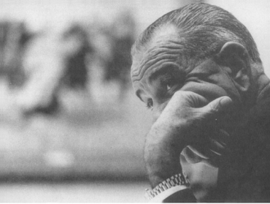

Lyndon B. Johnson, Aralık 1965
Çinhindi ile uğraşmak zorunda kalan peş peşe üçüncü başkan olan John F. Kennedy, yerleşmiş birtakım politik kurallarla işe başladı. Kendisinden öncekiler gibi Kennedy de Vietnam’ı, Amerika’nın genel jeopolitik konumunda çok önemli bir halka olarak düşünüyordu. Truman ve Eisenhower gibi, bir komünist zaferini Vietnam’da durdurmanın Amerikan çıkarları açısından hayati önemde olduğuna inanıyordu. Yine kendisinden öncekiler gibi, Hanoi’deki komünist liderliğini, Kremlin’in bir taşeronu olarak görüyordu. Kısacası, Kennedy de tıpkı kendisinden önceki iki yönetim gibi, Güney Vietnam’ı savunmanın küresel çevreleme stratejisinin bir gereği olarak kabul etti.
Her ne kadar Kennedy’nin Vietnam politikası birçok yönden Eisenhower’ın politikasının bir devamı ise de, bazı önemli farklar da vardı. Eisenhower anlaşmazlığı bir asker gözü ile görüyordu: iki farklı devlet yani Kuzey ve Güney Vietnam arasında bir savaş. Oysa Güney Vietnam’a yapılan Vietkong saldırıları, Kennedy ekibine geleneksel bir savaş değil, gerilla savaşının yeni bir unsuru olarak yarı-sivil bir çatışma gibi görünüyordu. Kennedy takımının tercih ettiği çözüm yolu, Güney Vietnam’ı sosyal, politik, ekonomik ve askeri bakımdan bir devlet olarak kurmaktı. Öyle ki, kurulan bu yeni devlet Amerikalıların hayatını tehlikeye atmadan gerillaları yenebilecekti.
Kennedy ekibi, anlaşmazlığın yorumunu da kendisinden öncekilerden daha fazla felaket terimleri içinde yapıyordu. Eisenhower Vietnam’a karşı yapılan askeri tehdide konvansiyonel bir gözlükle bakarken, Kennedy ekibi, vaktinden önce olmakla beraber, Savunma Bakanı Robert McNamara’nın sözleri ile, Birleşik Devletler ile Sovyetler Birliği arasında bir genel savaşı düşünülemez duruma getiren bir nükleer dengenin var olduğuna inanıyordu. Yönetim, askeri bakımdan kuvvetlenmenin, Kore tipi sınırlı savaş yürütme fırsatını komünistlerin elinden alacağına inanıyordu. Bunun sonucu olarak, gerilla savaşını bir gelecek sorunu olarak kabul ediyorlar ve buna karşı direnmenin, Amerika’nın komünistleri çevreleme yeteneğinin nihai ölçütü olarak görüyorlardı.
6 Ocak 1961 ‘de, Kennedy’nin başkanlığa başlamasından iki hafta önce, Kruş-çev “ulusal kurtuluş savaşlarının kutsal” olduğunu söyleyerek onlara yardım sözü verdi. Kennedy’nin genç Yeni Cephe hareketi, bu çağrıyı Amerika’nın kalkınmakta olan dünyayı önemseyen tutumuna karşı bir savaş ilanı olarak kabul etti. Bugün, Kruşçev’in konuşmasının hedefinin, Pekin’deki ideolojik işkencecisi olduğunu herkes biliyor. Pekin, Kruşçev’i Leninizm’e ihanetle suçluyordu; çünkü Berlin ültimatomunu üçüncü kez uzatmıştı ve nükleer savaş hakkında sık sık çekinceler ileri sürmüştü. Ancak Kennedy, 31 Ocak 1961’de yaptığı ilk ulusa sesleniş konuşmasında, Kruşçev’in konuşmasını Sovyetler Birliği’nin ve Çin’in kısa bir süre önce büyük bir güçle yeniden belirttikleri “dünya hegemonyası ihtiraslarının” bir kanıtı olarak ileri sürmüştü.{892}
1965 Eylülü’nde, Johnson Yönetimi sırasında aynı yanlış anlama Çin’le ilgili olarak ortaya çıktı. Çin Savunma Bakanı Lin Piao’nun “Halkın Savaşı” hakkındaki manifestosu, Üçüncü Dünya’daki devrimler yoluyla dünyanın sanayici ülkelerinin “etrafının sarılması”ndan söz ediyordu.{893} Johnson Yönetimi, Lin’in konuşmasının sonundaki devrimciler arasında kendine güven duygusuna gereksinim olduğunu vurgulayan bölümünü atlayarak, bu konuşmayı, Çin’in Hanoi’ye müdahale edeceği hakkında bir uyarı olarak yorumladı. Bu, Mao’nun Çin ordularının yurtdışına çıkmadıkları yorumu ile birlikte düşünülürse, Çin’in artık komünist kurtuluş savaşlarına bulaşmak niyeti olmadığı anlamına geliyordu. Görünüşe göre, Kore Savaşı’ndan her iki taraf da aynı dersi almışlardı ve bu hatayı tekrarlamamakta kararlıydılar.
Kennedy ve Johnson yönetimlerinin komünist açıklamalarını yorumlamaları, Çinhindi’nin, Soğuk Savaş boyunca birçok savaş içinde herhangi bir savaş olarak algılanmasını olanaksız duruma getirmişti. Yeni Cephe hareketine göre, Çinhindi Savaşı gerilla savaşının durdurulmasını ve Soğuk Savaş’ın kazanılmasını sağlayacak belirleyici savaş olarak kabul edildi. Kennedy’nin çatışmayı koordineli bir küresel fırsat olarak yorumlaması, 1961 Haziran’ında Viyana Zirvesi’nde Kruşçev’in sert çıkışları ile gözü yılan Kennedy’nin saygınlığını tekrar kazanmak için uygun yerin Güneydoğu Asya olduğuna karar vermesine neden oldu: O zamanki The New York Times’in başyazarı olan James Reston’a şunu söylemişti: “Şimdi gücümüzün inanılırlığını göstermek sorunumuz var ve Vietnam bunun için aradığımız yerdir.”{894}
Kahramanın rastlantı gibi görünen olaylar sonunda geleceğini belirleyecek dikkatsiz bir adım attığı klasik trajedilerde olduğu gibi, Kennedy Yönetimi’nin Vietnam işine girmesi de kendinden öncekilerin kaçındıktan bir kriz dolayısıyla oldu: Laos’un geleceği. Dünyada Laoslular kadar çektikleri acıları hak etmeyen nazik, barışsever bir ulus daha yoktur. Vietnam’a bakan, geçilmez sıra dağları ile Tayland’la sınırı belirleyen geniş Mekog Nehri arasında sıkışıp kalan Laos halkının, savaşçı komşusundan istediği tek şey, kendisine dokunulmamasıydı. Ancak bu, Kuzey Vietnam’ın, hiçbir zaman yerine getirmediği bir istekti. Hanoi 1959’da Güney Vietnam’da gerilla savaşını başlattığı zaman, Laos üzerindeki baskı kaçınılmaz bir şekilde arttı. Hanoi, Güney’deki gerilla kuvvetlerine Vietnam topraklarından geçerek lojistik yardım yapsaydı, 17. paralel boyunca aşağı yukarı kırk mil genişliğindeki Vietnam’ı bölen sınır çizgisi olan askerden arındırılmış bölgeye sızmak zorunda kalacaktı. Bu bölge, Amerikan desteği ile Güney Vietnam ordusu tarafından tamamen kapatılmıştı. Ya da Kuzey Vietnamlıların 17. paralel boyunca organize askeri birliklerle bir saldırı başlatması gerekiyordu ki, böyle bir girişim hiç kuşkusuz Amerikan ve belki de SEATO’nun müdahalesini davet edecekti ve bu 1972’ye, yani Vietnam Savaşı’nın çok sonlarına kadar Hanoi’un göze alamayacağı bir şeydi.
Bütün savaş boyunca komünist stratejiyi damgalayan soğukkanlı bir mantıkla, Hanoi tarafsız Laos ile Kamboçya üzerinden Güney Vietnam’a sızmanın 17. paralel boyunca yapılacak bir saldırıdan daha zararsız uluslararası ceza ile savuşturulabilecek bir hareket olduğu sonucuna vardı. Her ne kadar Laos ve Kamboçya’nın tarafsızlığı 1954 Cenevre Anlaşması ile güvence altına alınmış ve SEATO anlaşması ile de doğrulanmış ise de, Hanoi kararını değiştirmedi. Sonuçta, egemen Laos’un bir kısmını topraklarına kattı ve hem orada, hem de Kamboçya’da dünya kamuoyundan önemli bir tepki almadan iki üs bölgesi kurdu. Gerçekte dünya kamuoyunun tepkisi Hanoi’nin tahmin ettiği gibi çıktı: Geniş tarafsız topraklara sızma hareketinin durdurulması için Amerika’nın ve Güney Vietnam’ın harcadığı çabalar, savaşı “yaydığından” dolayı kınandı.
Laos’un topraklarına kattığı tava sapına benzeyen bölümü, Kuzey Vietnam’a Güney Vietnam’ın Laos ve Kamboçya ile olan bütün sınırı boyunca 650 millik bir orman örtüsü altında bir ulaşım olanağı sağladı. 1959’da 6000 Kuzey Vietnam askeri, görünüşte komünist Pathet Lao’yu desteklemek amacıyla Laos’a girdi. Pathet Lao’nun birlikleri, 1954 Cenevre Anlaşması’ndan beri Hanoi tarafından Vietnam sınırı boyunca kuzeydoğudaki bölgeye yerleştirilmişti.
Bir asker olarak, Eisenhower Güney Vietnam’ın savunmasının Laos’ta başlaması gerektiğini anlıyordu. Kennedy fiilen göreve başlamadan önce, Eisenhower Laos’a gerekirse tek taraflı olarak müdahaleye hazırlandığını söylemişti: Kennedy’nin Laos hakkındaki ilk açıklamaları Eisenhower’ın önerilerine uyuyor. 23 Mart 1961 tarihindeki basın toplantısında şöyle bir uyarıda bulundu: “Bütün Güneydoğu Asya’nın güvenliği, Laos tarafsız egemenliğini yitirirse tehlikeye girecektir. Onun güvenliği, hepimizin güvenliği demektir ve herkes tarafından dikkate alınması gereken gerçek bir tarafsızlıktır.”{895} Ancak sadece beş gün sonra yeni savunma politikasını sunarken, Kennedy “Bugün dünyanın karşı karşıya bulunduğu temel problemler askeri çözümlerle halledilemez”{896} demiştir. Her ne kadar bu açıklama Laos’u savunma kararı ile tam olarak tutarsız değilse de, askeri harekât için bir çağrı da değildi. Hanoi hiçbir zaman savaşta olduğu konusunda hayal kurmadı ve savaşı kazanmak için de eline geçen her aracı kullanabilirdi. Kennedy daha kararsızdı. Komünistleri politik araçlarla çevrelemek ve mümkün olursa uzlaşmak yoluyla bunu başarmak ümidindeydi.
1961 Nisan’ında, Küba’ya karşı yaşanan Domuzlar Körfezi başarısızlığından sonra Kennedy müdahale aleyhine karar verdi ve Laos’un tarafsızlığını desteklemek için görüşmeler yolunu seçti. Amerikan müdahalesi tehdidi ortadan kalkar kalkmaz, tarafsızlık hakkındaki görüşmelerin Hanoi’nin kuvvetli pozisyonunu daha da güçlendireceği kesindi. Gerçekte, Hanoi 1954 Cenevre Konferansı’nda Laos’un tarafsızlığına saygı göstereceğini taahhüt ettikten sonra, şimdi aynı konuyu ikinci kez satışa sürüyordu.
Kuzey Vietnamlılar, sonradan Ho Chi Minh Yolu şeklinde isimlendirilen lojistik destek ağını iyice geliştirirken görüşmeleri bir yıl oyaladılar. Sonunda, Mayıs 1962’de Kennedy deniz piyadelerini komşu Tayland’a gönderdi. Bu hareket görüşmelerde çabuk karar alınmasını sağladı. Bütün yabancı askerlerin ve danışmanların, uluslararası kontrol noktaları yoluyla Laos’u terk etmesi gerekiyordu. Her Taylandlı ve Amerikalı danışman planlandığı şekilde ülkeyi terk etti; Laos’a gelen 6000 Kuzey Vietnamlıdan ise yalnızca kırkı (evet, kırkı) uluslararası kontrol noktalarından Laos’u terk etti. Geri kalanlar için, Hanoi yüzsüzlükle başka kimse olmadığını iddia etti. Artık Güney Vietnam’a giden yol ardına kadar açılmıştı.
Eisenhower’ın haklı olduğu meydana çıktı. Eğer Çinhindi on yıldan beri Washington’daki liderlerin ileri sürdükleri gibi Amerika’nın Pasifik’teki güvenliğinin kilit taşı ise, bunu savunacak en iyi yer Vietnam değil, Laos’tu; gerçekte, Çinhindi’nin savunulabileceği belki de tek yer burasıydı. Her ne kadar Laos uzak ve denize çıkışı olmayan bir ülke ise de, korkulan ve nefret edilen yabancılar olan Kuzey Vietnamlılar Laos toprakları üzerinde gerilla savaşı yapamazlardı. Amerika burada, ordusunun eğitimini gördüğü bir konvansiyonel savaş yapabilir ve Taylandlı birlikler de kuşkusuz Amerikan çabalarını desteklerlerdi. Bu ihtimallerle karşı karşıya kalan Hanoi, geri çekilerek toptan bir savaşı başlatmak için daha elverişli bir zamanı bekleyebilirdi.
Ancak bu kadar soğukkanlı bir stratejik analiz, geniş çapta ideolojik terimlerle algılanan bir çatışma için uygun görülmedi. (O zaman, benim görüşüm de böyleydi.) On yıl boyunca, Amerikan liderleri Vietnam’ı savunmayı bir dava haline getirmişlerdi; çünkü Vietnam Asya savunma kavramında kilit unsuru temsil ediyordu; şimdi birdenbire uzak ve geri bir dağlık krallığın Domino Teorisi’nin merkezi olarak seçilmesi suretiyle stratejinin gözden geçirilmesi, iç konsensüsü bozabilirdi.
Bütün bu nedenlerle, Kennedy ve danışmanları komünist saldırılarına karşı savunmanın, Amerikalılar için bir anlam ifade eden Güney Vietnam’da, Çinhin-di’nde yapılması gerektiğine karar verdiler. Ancak verdikleri karar, askeri bakımdan uygulanması hemen hemen olanaksız olan bir karardı. Çünkü yalnızca Laos’taki ikmal yolları açık değildi; Kamboçya’nın hilekâr ve kurnaz lideri Prens Sihanuk, artık işin bittiğine karar vererek Kamboçya’nın Güney Vietnam’la olan bütün sınırı boyunca komünist üslerin kurulmasına rıza göstermişti. Böylece şöyle bir döngü ortaya çıkmıştı: Kamboçya’daki komünist üslerine herhangi bir saldırı yapılmazsa, Kuzey Vietnamlılar Güney’e saldırdıktan sonra buralara çekilip ikmallerini yapacak ve dinleneceklerdi ve bu suretle Güney Vietnam’ın savunulması olanaksız hale gelecekti; eğer üslere saldırılırsa, Güney Vietnam ve müttefikleri “tarafsız” bir ülkeye “saldırı” düzenlemekle suçlanacaklardı.
Berlin krizi ile karşı karşıya iken, Amerikan halkının yüzde birinin bile işitmediği Çin sınırındaki bir ülke olan Laos için savaş riskini göze almakta Kennedy’nin isteksiz davranması anlaşılabilirdi. Bunun alternatifi olan, Çinhindi’nin tamamen terk edilmesi hiçbir zaman düşünülmedi. Kennedy, özellikle Domuzlar Körfezi başarısızlığından sonra, her iki partinin de desteklediği on yıllık bir yükümlülüğü tersine çevirmek-istemedi. Geri çekilmek, yeni komünist gerilla savaşı stratejisinin üstesinden gelmek için bir sınav olarak kabul edilen bu girişimde yenilgiyi kabul etmek anlamına gelecekti. Hepsinden önemlisi, Kennedy, Amerikan yardımının, Güney Vietnam askeri kuvvetlerinin komünist gerillaları yenmesine yeteceği yönündeki görüşlere inanmıştı. O masum günlerde, her iki siyasi partinin ileri gelenlerinin hiçbirisi, Amerika’nın gittikçe bataklığa saplandığı yönünde en küçük bir kuşku taşımıyordu.
Kennedy’nin Çinhindi hakkında on yıl öncesine ait kamuya mal olmuş sözleri vardı. 1951 Kasım’ında, sonuna kadar savunduğu ve terk etmediği bir tez ileri sürmüştü: Komünizmi durdurmak için tek başına kuvvet yeterli değildir; bu mücadelede Amerika’nın müttefikleri siyasi bir temel oluşturmak zorundadırlar:
“Komünizmin güneye sarkmasını önlemenin bir mantığı vardır; fakat bu is yalnızca silahların gücüne dayanılarak yapılamaz. Görev, daha çok bu bölgelerdeki yerli halkta komünist olmayan duyguları kuvvetlendirmek ve savunmanın köprü başı olarak buna dayanmaktır; yoksa General de Lattre‘in (Çinhindi’ndeki Fransız Kumandanı) lejyonlarına güvenmek değildir.”{897}
Nisan 1954’te, Dulles’ın Dien Bien Phu’yu kurtarmak için başlattığı Birleşik Hareket kampanyası sırasında, Kennedy Senato’da yaptığı bir konuşmada, Çinhindi bir Fransız sömürgesi olarak kaldığı sürece müdahale etme fikrine karşı bir tavır almıştı.{898} 1956’da Fransa çekildikten ve Güney Vietnam bağımsızlığına kavuştuktan sonra, Kennedy de yaygın düşünceye katıldı: “Bu bizim çocuğumuzdur, onu terk edemeyiz.” Aynı zamanda, anlaşmazlığın politik ve moral bir meydan okuma yönünün, askeri yönünden daha ağır bastığım söyledi. “Hür teşebbüs ve kapitalizmin anlamsız bir şey olduğu bu ülkede, sefalet ve açlığın, 17. paralelin karşı tarafındaki düşman değil, içlerindeki düşman olduğu bu ülkede... bizim onlara önermemiz gereken şey bir devrimdir. Komünistlerin verebileceğinden çok üstün politik, ekonomik ve sosyal bir devrimdir.” Burada, Amerika’nın inanılırlığı tehlike altındaydı: “Eğer Güney Vietnam mevcudiyetini tehdit eden tehlikelerden birinin –yani komünizm, politik anarşi, yoksulluk ve diğerlerinin– kurbanı olursa, o zaman Birleşik Devletler, kısmen de haklı olarak bundan sorumlu tutulacak ve Asya’daki prestijimiz tamamen yok olacaktır.”{899}
Kennedy’nin söylemek istediği şey, kurbanı saldırıya karşı daha dirençli hale getirmek gibi görünüyor. Bu yaklaşım, diplomasi sözlüğünde daha önce olmayan ve halen kullanılan yeni bir kavram yarattı: “Ulus yaratma” nosyonu. Kennedy’nin yeğlediği strateji, Güney Vietnam’ı, komünizme kendisi direnecek kadar kuvvetlendirmekti. Sivil hareket ve iç reformlar üzerinde kuvvetle duruluyor ve resmi slogan, Amerika’nın güvenliğinin değil prestij ve saygınlığının Vietnam’la aynı paralelde olduğu şeklinde değiştiriliyordu.
Çinhindi ile uğraşmak zorunda kalan her yeni yönetim, gittikçe daha derin bir şekilde bataklığa saplanıyordu. Truman ve Eisenhower, askeri yardım programını kurmuştu; Kennedy’nin reformlar üzerinde ısrarla durması, Amerika’nın Güney Vietnam’ın iç politikasına daha çok bulaşmasına yol açmıştır. Problem, Güney Vietnam’da reformların ve bir ulus yaratma çabalarının meyvesini vermesi için onlarca yılın geçmesinin zorunlu olmasıydı. Avrupa’da 1940’lı ve 1950’li yıllarda, Amerika güçlü politik geleneği olan mevcut ülkeleri Marşal Planı yardımı ve NATO askeri ittifakı ile desteklemiştir. Fakat Vietnam yepyeni bir ülkeydi ve üzerine bina yapılabilecek kurumları yoktu. Temel çıkmaz, Güney Vietnam’da bir yandan politik olarak istikrarlı bir demokrasi kurarken, diğer yandan da askeri olarak gerillanın zaferini önlemek şeklindeki Amerikan amaçlarına aynı zamanda erişmenin olanaksız olmasıydı. Amerika, ya askeri, ya da siyasi amacını değiştirmek zorundaydı.
Kennedy işe başladığı zaman Güney Vietnam’da gerilla savaşı öyle bir şiddet düzeyine varmıştı ki, henüz hükümetin devamı konusunda şüpheler yoksa da, Ngo Dinh Diem hükümetinin durumunu kuvvetlendirmeyi imkânsız hale getirmişti. Gerilla aktivitesinin durgun olması, Kennedy Yönetimi’ne ek küçük bir çabanın tam zafer sağlamak için yeterli olacağı izlenimini verdi. Geçici durgunluk Hanoi’nin Laos’la meşgul olmasından kaynaklanıyordu ve fırtınadan önceki sessizliğe benziyordu. Laos’ta yeni ikmal yolları açılır açılmaz, Güney’deki gerilla savaşı yeniden tırmanmaya başladı ve Amerika’nın çıkmazı çözülemez bir şekilde gittikçe büyüdü.
Kennedy Yönetimi’nin Vietnam bataklığına doğru gidişi, Mayıs 1961’de Başkan Yardımcısı Johnson’un başkanlığındaki bir heyetin durum “değerlendirmesi” için Saygon’a yaptığı bir ziyaretle başladı. Böyle misyonlar, genellikle bu konuda kararın zaten verilmiş olduğu işaretini verir. Hiçbir başkan yardımcısı, on yıldan beri devam eden bir gerilla savaşı hakkında iki üç günlük bir ziyaretle bağımsız bir karar verebilecek pozisyonda değildir. Her ne kadar (başkana bağlı olarak) haber alma ve bu konuda rapor ve mesajlara ulaşabilirse de, geniş analizler için yeterli bir danışmanlar heyetine sahip olmadığı gibi, alınan kararları izleyecek bir memur kadrosu da yoktur. Başkan yardımcılarının denizaşırı misyonları, genellikle ya Amerikan prestiji ile ilgilidir veya alınmış kararların inanılırlığını sağlamak içindir.
Johnson’un Vietnam’a yaptığı ziyaret, bu kuralların tam bir örneğiydi. Bu misyonu açıklamadan önce, Kennedy, Senato Dış ilişkiler Komitesi Başkanı Senatör J. William Fulbright’la buluşarak, Amerikan birliklerinin Vietnam ve Tayland’a gönderilebileceği uyarısında bulundu.{900} Senatör Fulbright destek sözü verirken, ilgili ülkelerin yardım talebinde bulunmalarını şart koştu. Bu, klasik Amerikan tepkisiydi. Bir Richelieu, bir Palmerston veya bir Bismarck, böyle bir durumda ilk önce bu işte ulusal çıkarımızın ne olduğunu sorardı. Fulbright ise, daha çok Amerika’nın hukuki ve moral konumuyla ilgiliydi.
Johnson’un hareket günü ile aynı zamana denk gelecek şekilde, Ulusal Güvenlik Konseyi 11 Mayıs tarihli bir direktifle Güney Vietnam’da komünist hegemonyasının engellenmesinin, Amerika’nın ulusal amacı olduğunu belirledi. Strateji, askeri, politik, ekonomik, psikolojik ve gizli faaliyetlerle “bu ülkede yaşama yeteneği olan ve gittikçe demokratikleşen bir toplum yaratmaktı”.{901} Sınırlandırma politikası, bir ulusun yaratılması politikasına dönüşüyordu.
Johnson, Çinhindi’nde en büyük tehlikenin komünist meydan okuması değil –komünist tehlikesi, açıklanan sebeplerle “geçici” olarak tanımlıyordu– fakat açlık, bilgisizlik, yoksulluk ve hastalıklar olduğunu ileri sürdü. Johnson, Diem’i hayran olunacak bir kişi olarak değerlendiriyor; fakat halkından “uzak” olduğunu ve Amerika’nın tek seçiminin Diem’i desteklemek ile orayı terk etmek arasında olduğunu söylüyordu.{902} Güney Vietnam, Birleşik Devletler çabuk ve kararlı hareket ederse kurtulabilirdi. Johnson, gerilla savaşının gelişme hızı düşünülürse, Birleşik Devletler’in açlık, yoksulluk ve hastalıkları nasıl yok edeceğini açıklamıyordu.
Prensip böylece ortaya konduktan sonra, Yönetim’in bundan sonra yapması gereken şey politikayı oluşturmaktı. Ancak sonraki üç yıl Berlin kriziyle uğraşıldı. 1961 sonbaharında tekrar Vietnam’a dönüldüğü zaman, güvenlik durumu o kadar kötüleşmişti ki, bir çeşit Amerikan askeri müdahalesi olmadan düzeltilmesi olanağı kalmamıştı.
Başkanın askeri danışmanı General Maxwell Taylor ve Dışişleri Bakanlığı Politika Planlama Dairesi Direktörü Walt Rostow, uygun bir politika geliştirmek için Vietnam’a gönderildi. Taylor ve Rostow, Kennedy’nin iç kabinesi sayılan danışmanlar heyetinin üyeleriydiler, Johnson gibi değildiler. Onların da tıpkı Johnson gibi daha Washington’u terk etmeden Amerika’nın Vietnam politikası hakkında oluşturulmuş görüşleri vardı. Misyonlarının gerçek amacı, Amerika’nın yükümlülüğünü ne derecede ve hangi tarzda artırabileceğine karar vermekti.
Sonuçta Taylor ve Rostow, Vietnam yönetimine Amerika’nın danışmanlık rolünün bütün düzeylerde yoğun bir şekilde artırılması önerisinde bulundular. Böylece 8.000 kişilik askeri lojistik kuvvet Vietnam’a gönderilecekti; görünüşte Mekong Deltası’nda sel sularının kontrolü için gönderilen bu güç, kendilerini savunacak kadar silahla teçhiz edilmişti ve sivil danışmanlarda önemli bir miktarda artış yapılması da önerilerin içinde vardı.
Sonuç, Kennedy Yönetimi’nde, Amerika’nın Vietnam’a karışmasının yalnızca danışmanlık rolü çerçevesinde kalmasını isteyenlerin görüşü ile savaş birliklerinin hemen devreye girmesinden yana olanların görüşü arasında ara bir yoldu, ikinci grup, Amerikan savaş birliklerinin misyonu hakkında da aynı görüşte olmaktan çok uzaktılar; problemin büyüklüğünü olduğundan daha az tahmin etmekte ise, birleşiyorlardı. Savunma bakanı yardımcılığına vekâlet eden William Bundy’nin tahminine göre, 40.000 kişilik bir savaş birliğinin, Genelkurmay’ın fikrine göre “olayları kontrol altına alma” şansı yüzde 70’ti.{903} Gerilla savaşı zaferle yenilgi arasında ortada bir noktada durmayı bilmediğine göre, “olayları durdurma”, Amerika’nın küresel saygınlığını tehlikeye sokarken, çöküntüyü yalnızca erteleyecekti. Bundy, önceden biliyormuş gibi, yüzde 30 başarısızlık ihtimali olarak tanımladığı durumun, Fransa’nın 1954’te başına gelenleri de içerdiğini ekledi. Aynı zamanda, Savunma Bakanı Robert McNamara ve genelkurmay başkanının tahminine göre, Hanoi ve Pekin açıkça müdahale ederlerse bu savaştan zaferle çıkmak için 205.000 Amerikalıya gereksinim olacaktı.{904} Olaylar öyle gelişti ki, bu rakam Amerika’nın nihai olarak yalnızca Hanoi ile savaşmak için ayırdığı kuvvetin yarısından da azdı.
Bürokratik uzlaşma, genellikle şuur altında var olan, bu arada bir olayın ortaya çıkıp sorunu kendiliğinden çözeceği ümidini yansıtır. Fakat Vietnam olayında, böyle bir umut inandırıcı bir temel yoktu. Olayları durdurmak için 40.000, zafer kazanmak için 205.000 asker arasında değişen resmi tahminlerle, Kennedy Yönetimi 8.000 kişilik askeri gücü, ya yetersiz görmek veya daima büyüyen Amerikan rolünün, ilk kısmı olarak kabul etmek zorunda idi. “Olayları durdurmak” için yüzde 70 oranı cazip olsa da, bunun Fransa’nın başına gelene benzer küresel bir felaketin etkileri düşünülerek değerlendirilmesi gerekiyordu.
Kennedy, neyin tehlikede olduğu hakkındaki değerlendirmesini değiştirmediği için, ibre daha fazla artırımlar yönünü gösteriyordu. 14 Kasım 1961’de danışmanlarına, Birleşik Devletler’in “saldırıya” karşı reaksiyonunun “Demir Perde’nin her iki tarafında da... Yönetim’in niyetlerinin ve kararlılığının bir göstergesi olarak değerlendirileceğini” söyledi. Eğer Amerika takviye göndermek yerine görüşmeyi seçseydi “Laos’tan daha zayıf bir ülke olarak görülürdü.”{905} Chester Bosvles ve Averell Harriman’ın gerçekte Güney Vietnam’daki çabaları sona erdirmek için bir göz boyama olan, 1954 Cenevre Anlaşması’nın uygulanması için “göriişme”ler başlatmak yönündeki önerisini reddetti.
Fakat görüşme yöntemi reddedilip, askeri güçlerin takviyesi yolu tek yol olarak seçilirse, sonu belli olmayan Amerikan yükümlülüğünden ancak Hanoi geri adım atarsa kaçınılabilirdi. Ancak Hanoi’nin geri çekilmesi mümkünse bile, bunu yapmanın yolu askeri kuvvetleri azar azar değil, yoğun bir şekilde takviye etmekti. Amerika, gerçek seçimin, ya topyekûn bu işe girişmek veya tamamen çekilmek olduğunu ve en tehlikeli yolun, bu işin yavaş yavaş tırmanması olduğunu kabul etmeye hazır değildi.
Ne yazık ki, yavaş yavaş tırmanma, günün modasıydı. Saldırıyı çok fazla kuvvet kullanmadan durdurmak için düşünülen bu yol, politik kararlar yoluyla askeri planlamanın, I. Dünya Savaşı öncesinde olduğu gibi kontrolsüz kalmasını önlemek anlamına gelir. Adım adım tepki göstermek, aslında nükleer savaş için kabul edilen bir stratejidir; savaşı yavaş yavaş tırmandırarak topyekûn felaketten kaçış yoludur. Bu prensip gerilla savaşına uygulandığı zaman, sonu belli olmayan bir tırmanmayı davet riski taşır. Her sınırlı girişimin, sonucu göze alarak hareket etmek yerine, çekingenlik olarak yorumlanması tehlikesi vardır ve bu durum, düşmanı savaşı tırmandırmaya devam etme konusunda cesaretlendirir ve ona, eğer riskler kabul edilemez hale gelirse de, araziye iyice yerleşmek için yeterli zaman tanır.
Tarihi kayıtların daha yakından incelenmesi, Hanoi’deki liderlerin, Amerika’nın özel stratejik teorileri nedeniyle cesaretlerinin kırılmayacağını, Batı teknolojisinin üstesinden gelmek konusunda bir dahi olduklarını ve demokrasinin ne hedeflerinden birisi, ne de hayran oldukları bir sistem olduğunu gösterebilirdi. Barış içinde yapılanma zevki, bu Fransız döneminin hücre hapisleri ve onlarca yıllık gerilla savaşı deneyimiyle katılaşmış bu kıdemli gerillalar için bir şey ifade etmiyordu. Amerikan tarzı reformları küçük görüyorlardı. Yaşamları boyunca, birleşmiş bir komünist Vietnam kurmak ve yabancı etkisini kovmak için mücadele etmişler ve acı çekmişlerdi. Devrim savaşı onların tek mesleğiydi. Amerika, bütün dünyayı araştırsa onlar kadar inatçı bir düşman bulamazdı.
O zamanki Dışişleri Bakanlığı Haber Alma ve Araştırma Bürosu Direktörü Roger Hilsman’a göre, Amerika’nın hedefi Vietkong’u “bütün enerjilerini hayatta kalmak için harcayan aç çapulcu sürülerine”{906} dönüştürmekti. Fakat tarihte hangi gerilla savaşında böyle bir sonucun örneği vardı? Malaya’da, dışarıdan önemli bir yardım görmeyen ve emniyetli iletişim hatları olmayan ve yeni katılımlar için çok az imkânı olan 10.000 kişilik bir kuvveti yenmek için 80.000 İngiliz ve onun iki misli kadar Malayalı asker on üç yıl mücadele etmişlerdi. Vietnam’da, gerilla ordusu sayı bakımından onlarca bindi ve Kuzey Vietnam, mücadelenin arka cephesini oluşturmak için organize olmuştu. Yüzlerce mil sınır boyunca üsler oluşturulmuştu ve gerilla ordusu çok zor duruma düşerse, deneyimli Kuzey Vietnam ordusunun her an müdahale etme seçeneği vardı.
Amerika, Bundy’nin gerekli gördüğü 40.000 kişilik kuvvetle (ki bu da zaten az tahmin edilmiş bir sayıydı) en iyi koşullarda dengeyi sağlayabileceği bir konuma kendisini soktu. Kennedy başkanlığı aldığı zaman, Vietnam’daki Amerikalı askeri personel sayısı 900’e yakındı. 1961 yılı sonunda 3164, Kennedy 1963’te öldürüldüğünde 16.263 oldu, yolda olanlar da hariçti. 1960’ta Amerikan ölü sayısı 5; 1961’de 16; 1963’te 123 oldu ve 1964’te, Amerika’nın savaş birliklerinin bizzat savaşa katılmasından bir yıl önce 200’ü aşmıştı. Buna karşılık askeri durumda önemli bir iyileşme olmamıştı.
Güney Vietnam’da Amerikan askeri rolü ne kadar genişlediyse, Amerika’nın politik reform baskısı da o kadar arttı. Washington iç değişiklikler için ne kadar ısrarlı olduysa, savaşı da o kadar Amerikalılaştırdı. 28 Mart 1961’de, savunma konusundaki ilk konuşmasında Kennedy, esas tezini bir kez daha ifade etti: Amerika’nın stratejik silahları ne kadar güçlü olursa olsun, kenarlardan “yıkıcı hareketler, sızmalar, gözdağı vermeler, dolaylı veya açık olmayan saldırılar, iç ayaklanmalar, diplomatik şantaj, gerilla savaşlarıyla”{907} yavaş yavaş kemiriliyordu. Bunların üstesinden gelebilmenin tek yolu, olası kurbanların kendi kendisini kurtarmasını sağlayacak politik ve sosyal devrimleri gerçekleştirmelerine yardımcı olmaktı.
Kennedy Yönetimi herkesçe bilinen gerçeği seçerek, Çinhindi’nin birçok çözülemeyen çıkmazlarından birini belirledi: Aynı anda hem politik reformlar, hem de askeri zafer peşinde olmak bir kısır döngü yarattı. Geniş sınırlar içinde hareket eden gerillalar, savaşın yoğunluğunu ayarlayabilecek pozisyondaydılar ve bundan dolayı güvenliğin düzeyi, reformların gerçekleştirilmesinin hızından tamamen bağımsızdı. Güvensizlik ne kadar çoksa, Saygon hükümeti de o kadar ağır elli idi. Washington, gerillaların başarılarını, kısmen de olsa reformların ağırdan alınmasına bağladığı müddetçe, Hanoi Amerikalıların Saygon hükümeti üzerindeki baskılarını artıracak şekilde hareket ederdi. Hanoi’deki fanatik ideologlar ile Washington’daki deneyimsiz idealistler arasında kalan Diem’in hükümeti, donarak hareketsizleşti ve beklenilen şekilde yenilgiye uğradı.
Diem’den daha az mandarin gelenekleri ile yoğrulmuş bir politik lider bile, gerilla savaşı devam ederken bölgelere, mezheplere ve kabilelere ayrılmış bir toplumda çoğulcu demokrasiyi kurmanın olanaksızlığını görebilirdi. Amerika’nın bütün girişiminde inanılırlık noksanlığı vardı. Bunun nedeni, Amerikalı liderlerin halkı kandırması değil, aksine kapasiteleri üzerinde ve kendi kurumlarının başka kültürlere kolayca transfer edilebileceği şeklinde kendilerini kandırmalarıydı. Temelde, Kennedy Yönetimi Wilson felsefesini uyguluyordu. Wilson’ın, Amerika’nın demokrasi ve diplomasi nosyonlarının Ondört Nokta şeklinde Avrupa’ya aşılanabileceğine inanması gibi, Kennedy Yönetimi de Vietnamlılara kendilerini yönetecek temel Amerikan kurallarını vermek istedi. Güney’deki despotlar yerlerinden indirilir ve yerlerine iyi demokratlar geçirilirse, bütün Çinhindi’ni içine almış olan anlaşmazlık kuşkusuz yatışacaktı.
Her yeni Amerikan yönetimi, Vietnam’a artan yardımları, reformların gerçekleştirilmesi şartına bağladı. Eisenhower 1954’te böyle yaptı; Kennedy, 1961’de Vietnam hükümetine, her düzeyde danışman rolünün Birleşik Devletler tarafından yapılması koşuluyla yoğun şekilde artan yardımda bulunurken bu konuda hâlâ ısrarlıydı. Tahmin edilebileceği gibi Diem bunu reddetti; bağımsızlık savaşı veren liderler, çok ender olarak kendilerine öğretmenlik yapılmasından hoşlanırlar. 1962’nin sonlarında Vietnam’ı ziyaret eden Senatör Mansfield, önceki görüşünü değiştirerek (Bkz. Bölüm 25), Diem hükümetinin “sorumlu ve uyumlu hükümet imajından gittikçe uzaklaştığı” kanısına vardı.{908}
Bu kanaat doğruydu. Ancak anahtar soru, bu şartların oluşmasındaki nedenlerin ne dereceye kadar hükümetin yetersizliklerinden veya Vietnam ile Amerika arasındaki kültür farkından ya da gerillaların tahribatından ileri geldiği sorusuydu. Yönetim ile Diem arasındaki ilişki 1963 yılı boyunca gittikçe kötüleşti. Saygon’dan haberler geçen medya, o zamana kadar Amerika’nın hareketlerinin daima destekleyicisi olmuşken, düşmanca bir tavır takınmaya başladı. Eleştiriler, Amerika’nın Vietnam’daki hedeflerini sorgulamıyordu (sonradan bunu da yaptılar); fakat Diem gibi baskıcı bir liderle işbirliği yaparak demokratik, komünist olmayan bir Güney Vietnam yaratmanın olası olup olmadığı tartışılıyordu. Diem’in Hanoi ile uzlaşmayı bile düşündüğünden kuşku duyuldu. Birkaç yıl sonra ise, yeni Güney Vietnam Başkanı Nguyen Van Thieu böyle bir öneriyi reddettiğinden dolayı kınandı.
Saygon ile bağların nihai olarak kopmasına neden olan olay, Güney Vietnamlı Budistlerle Diem arasında çıkan anlaşmazlıktı. Diem’in hükümeti, bir tebliğ çıkararak mezheplerin, dini grupların veya politik partilerin bayrak kullanmalarını yasakladı. Tebliğin uygulanması sırasında, 8 Mayıs 1963’te Hue’de birlikler, protestocu Budist göstericiler üzerine ateş açtı ve birkaçını öldürdü. Protestocuların şikâyetleri gerçekti (ancak demokratik eksiklik bunlardan birisi değildi) ve uluslararası medya bu durumu ele aldı. Diem gibi sıkı devlet yönetimine taraftar olan Budistler, Diem’e karşılık verebileceği herhangi bir şart ileri sürmeyi reddettiler. Nihai olarak, sorun demokrasi sorunu değil, kuvvet sorunu idi. Gerilla savaşları ve kendi yetersizlikleri ile hareket edemez hale gelmiş Diem hükümeti ödün vermeyi reddetti. Washington Diem üzerindeki baskısını artırarak ödün vermesini ve güvenlik kuvvetlerinden sorumlu kardeşi Ngo Dinh Nhu’nun görevden alınmasını istedi. Diem bu demarche’ı, kendisini düşmanlarının insafına terk eden bir iktidar oyunu olarak yorumladı. Son olay 21 Ağustos’ta oldu; Nhu’nun adamları bazı pagodalara baskın düzenleyerek 1400 rahibi tutukladılar.
24 Ağustos’ta, yeni Büyükelçi Henry Cabot Lodge’a, Nhu’nun görevden alınması ve bu reddedilirse Birleşik Devletler’in “Diem’in kendisinin korunamaması olasılığını”{909} kabul etmek zorunda kalacağı uyarısını Diem’e bildirmesi talimatı verildi. Ayrıca Saygon askeri liderlerine, gelecekteki Amerikan yardımının, Nhu’nun görevden alınmasına bağlı olacağı resmen bildirildi. Bu, Lodge’un Vietnamlı muhatapları için Diem’in devrilmesi gerektiği anlamına geliyordu. Kennedy ve McNamara aynı talepleri açıkça tekrarladılar. Generallerin mesajı tam algılamaları için, onlara Birleşik Devletler’in “merkezi hükümet mekanizmasının bozulması halinde, ara devrede doğrudan doğruya yardım yapacağı” söylendi.{910} Güney Vietnamlı generallerin cesaretlerini toplayıp ısrarcı müttefikinin önerisine göre hareket etmesi için hemen hemen iki ay geçti. Sonunda 1 Kasım’da Diem’i devirerek onu ve Nhu’yu öldürdüler.
Diem’in devrilmesini teşvik eden Amerika, Vietnam’daki müdahalesini somutlaştırdı. Nihai olarak her devrim savaşı, hükümetin hukuka uygunluğu ile ilgilidir; o hükümeti düşürmek gerillaların başlıca hedefidir; Diem’in devrilmesi ile bu hedef Hanoi’ye bedavadan hediye edilmiş oldu. Diem’in feodal tarzda hükümet etmesinin bir sonucu olarak, onun yıkılışı, sivil yönetimin köy düzeyine kadar bütün katlarını etkiledi. Otoritenin temelden yeniden inşa edilmesi gerekti. Tarih bize, devrimlerin şu demirden kanununu öğretiyor: Mevcut otoriteyi kökünden söküp atma ne kadar geniş çapta yapılırsa, yerine geçenler de egemenliklerini kurmak için o kadar çok çıplak kuvvete dayanmak zorunda kalırlar. Çünkü sonuçta, meşruiyet zorlama olmadan otoritenin kabulünü içerir; onun olmayışı, her rekabeti bir kuvvet denemesine dönüştürür. Hükümet darbesinden önce, hiç olmazsa teorik olarak Amerika’nın, hemen hemen on yıl önce Dien Bien Phu’da Eisenhower’ın son anda geri çekilmesinde olduğu gibi, askeri harekâta doğrudan doğruya katılmayı reddetmesi olasılığı vardı. Ancak hükümet darbesi savaşın daha etkili bir şekilde yapılması için göze alındığına göre, artık savaştan çekilme, bir politik seçenek olarak ortadan kayboldu.
Diem’in düşürülmesi, Washington’un ümit ettiği gibi generallerin halkın arkasında birleşmesini sağlamadı. Her ne kadar The New York Times hükümet darbesini “bütün Güneydoğu Asya’da komünist akımları geri püskürtecek”{911} bir fırsat olarak alkışlamışsa da, gerçekte tam aksi olmuştur. Çoğulcu bir toplumun dayandığı temel, temel değerler üzerindeki konsensüstür ve bu değerler rekabet halindeki kişiler veya grupların talepleri için bir sınır oluşturur. Vietnam’da bu konsensüs baştan zayıftı. Hükümet darbesi on senede inşa edilen bünyeyi yıktı ve yerine politik tecrübeden ve taraftardan yoksun bir çekişen generaller grubunu getirdi.
Yalnız 1964 yılı içinde yedi hükümet değişikliği daha oldu; hiçbirisi demokrasiye benzer bir şey getiremedi ve hepsi de şu veya bu şekilde yapılan hükümet darbelerinin sonucu idi. Diem’in yerine gelenler, onun bir milliyetçi olarak ve mandarin tarzı baba figürü ile sahip olduğu prestije de sahip değildiler ve savaşı Amerikalılara devretmekten başka yapacak bir şeyleri yoktu. Diem’in devrilmesinin ardından haklı olarak şu argüman ileri sürüldü: “Sorun, Güney Vietnam’da Amerika’nın destekleyeceği bir rejim kurmak değil, bayram yapan komünistlere karşı mücadeleyi devam ettirebilecek desteği sağlayacak bir rejim bulmaktı.”{912}
Hanoi’deki liderler, ellerine geçen fırsatı hemen değerlendirdiler. 1963 Aralık’ında toplanan Komünist Partisi Merkez Komitesi toplantısında yeni strateji ortaya kondu: Gerilla birlikleri kuvvetlendirilecek ve Güney Vietnam’a sızmalar hızlandırılacak. En önemlisi, Kuzey Vietnam düzenli birlikleri devreye sokulacak: “Kuzey için Güney’e yardımı artırma zamanı gelmiştir; Kuzey, bütün ülke için ihtilalci temel oluşturacak rolüne yeni bir canlılık getirmelidir.”{913} Hemen arkasından, 325. Kuzey Vietnam tümeni güneye hareket etmeye başladı. Darbeden önce, Kuzey’den sızmalar çoğunlukla 1954’te gruplaşan Güneylilerden oluşuyordu; bu tarihten 1968 Tet Saldırısı’na kadar Kuzeylilerin oranı düzenli bir şekilde arttı ve söz konusu saldırıdan sonra sızanların hemen hemen hepsi Kuzey Vietnamlıydı. Düzenli Kuzey Vietnam ordu birliklerini savaşa katılması ile her iki taraf da artık geri dönülemeyecek noktayı geçmiş oldular.
Diem’in devrilmesinden hemen sonra Kennedy öldürüldü. Yeni Başkan Lyndon Baines Johnson, düzenli Kuzey Vietnam birliklerinin savaşa karışmasını açıkça yapılan saldırının klasik bir örneği olarak yorumlandı. Hanoi belli bir strateji uygularken, Washington’un, hiç birisi bir kararla sonuçlanmayan teorileri olması talihsizlikti.
Askeri olmayan bir zafer kazanma hasreti ile askeri bir felaketin önsezisi arasında tercih yapmakta bocalayan Amerika, trajik bir şaşkınlık içindeydi. 21 Aralık 1963’te, McNamara yeni başkana, Güney Vietnam’da güvenlik durumunun çok rahatsızlık verici olduğunu rapor etti. Amerika artık uzun süredir ortada duran seçimi yapmaktan kaçınamazdı: Askeri müdahalesinin büyük ölçüde arttırılması veya Güney Vietnam’ın çöküşü. Kennedy Yönetimi demokrat olmayan bir müttefikin yanında savaşa katılmaktan çekinmişti; Johnson Yönetimi ise, savaşa katılmaktan çok, yine demokrat olmayan Saygon hükümetini terk etmekten çekiniyordu.
Geriye bakıldığında, Amerika’nın ağır olmakla beraber katlanılabilir bir bedelle Güney Vietnam’dan çekilmesi için en iyi zamanın, Diem’in devrilmesinden hemen önceki veya sonraki zaman olduğu görülüyor. Kennedy Yönetimi’nin Diem’le bu savaşı kazanamayacakları değerlendirmesi doğruydu. Johnson Yönetimi ise, Diem’in yerine gelenlerle savaşı kazanabileceği konusunda kendisini aldattı. Darbeden sonra olanlar düşünülürse, Amerika için Diem’in kendi yetersizlikleri yüzünden devrilmesine izin vererek veya en azından Diem’in Hanoi ile yaptığından şüphelendiği gizli görüşmelere karışmayarak ilişkiyi kesmesi daha kolay olacaktı. Kennedy, bu işin sonunda komünistlerin hâkimiyeti ile sonuçlanacağı şeklindeki analitik tahmininde ve bu yüzden bazı planları reddetmekte haklıydı. Ancak sorun şuydu ki, Amerika ne uygulanacak bir çözümün sonuçları ile yüz yüze gelmeye, ne de olaylar kendi akışına bırakılırsa bunun olası sonucunu kabul etmeye hazırdı.
Kennedy Yönetimi’nin eski üyelerinden bazıları, 1964 başkanlık seçiminden sonra başkanlarının halen çoğalmakta olan Amerikan kuvvetlerini geri çekmeye niyetlendiğini iddia ettiler; onlar kadar önemli yerlerde olan başkaları ise, bunu inkâr ettiler. Burada insanın Kennedy’nin nihai niyeti hakkında söyleyebileceği tek şey, birbiri arkasından Vietnam’a yapılan takviyelerin onun seçim yapmasını çok zorlaştırdığı ve yükümlülüğünü devam ettirme veya çekilme kararını daha sancılı ve pahalı hale getirdiğidir. Amerika’nın ortaya koydukları, başlangıçta askeri açıdan sonra da Amerikan uluslararası prestiji bakımından her geçen ay daha da arttı.
Kennedy’nin öldürülmesi, Amerika’nın Vietnam’dan kurtulmasını daha da zorlaştırdı. Eğer Kennedy Amerika’nın devam edemeyeceği bir yola girdiği gerçeğini hissetmiş idiyse, yalnızca kendi kararını tersine çevirmesi gerekiyordu; diğer taraftan, Johnson’un kendinden önceki saygı duyulan başkanın açık politikasını fırlatıp atması gerekirdi. Özellikle Kennedy Yönetimi’nden devraldığı danışmanlardan hiçbirisi Johnson’a Vietnam’la ilgiyi kesme konusunda hiçbir öneride bulunmamıştı (Başkanın yakın çevresinden olmayan Dışişleri Bakan Yardımcısı George Ball hariç). Görevine yeni başlamış bir lider için bu kadar büyük bir çekilme kararını vermek, gerçekten olağanüstü bir kendine güven duygusuna ve bilgiye sahip olmayı gerektirir ve dış politika konusunda Johnson hiç de kendinden emin değildi.
Yeni başkan, Amerika’nın bu kadar yatırım yaptığı askeri ve politik hedeflere ulaşılıp, ulaşılamayacağı, ulaşılacaksa hangi araçlarla ve ne kadar zamanda ulaşılabileceği konularında ve hatta bu bağlantıları doğuran ilkelerin doğru olup olmadığı konusunda kapsamlı bir analiz yaptırsaydı, iyi bir iş yapmış olurdu. Ancak Johnson’un Kennedy’den devraldığı sofistike danışmanların hepsinin, oybirliği etmişçesine Vietnam’da kazanmaktan yana olmaları bir tarafa (George Ball’un aynı fikirde olmadığını burada tekrarlayabiliriz) böyle bir analiz yapılmış bile olsa sonucun önemli ölçüde farklı olacağı kuşkuludur. McNamara’nın Savunma Bakanlığı ve Bundy’nin Beyaz Saray kadrosu analize doymazlardı. Her ikisi de olağanüstü zeki insanlardı. Sahip olmadıkları tek şey, Amerikan deneyim ve ideolojisiyle bu kadar çelişkili bir sorunu değerlendirmek için gerekli olan kriterdi.
Amerika’nın Vietnam işine karışmasının ilk nedeni, Vietnam’ın kaybedilmesinin komünist olmayan Asya’nın çöküşüne yol açacağı ve Japonya’ya komünizmin yerleşeceği korkusuydu. Bu analizin şartlarına göre, Amerika Güney Vietnam’ı savunurken bu ülkenin demokratik olup olmamasına, ya da bir gün olup olmayacağına bakmaksızın esasen kendisi için savaşıyordu. Ancak böyle bir analiz, Amerikalılar için çok jeopolitik ve kuvvet merkezli olup kısa zamanda Wilson idealizmi tarafından yenilecekti. Yönetimler birbiri ardından şu ikili göreve soyundular ve bu görevin her iki parçasının da gerçekleştirilmesi çok zordu: Bütün çevresi güvenlik içindeki üslerle çevrili bir gerilla ordusunu yenmek ve çoğulculuk geleneği olmayan bir toplumun demokratikleştirilmesi.
Amerika, Vietnam kazanında en kutsal inanışların bile sınırları olduğunu öğrenecek ve kuvvet ile prensipler arasındaki farktan doğabilecek boşlukla uzlaşmaya mecbur bırakılacaktı. Amerika tarihi deneyimine karşıt olan dersleri kabul etmekte isteksiz olduğu için kayıplarını azaltmakta da olağanüstü derecede zorlandı. Böylece, her iki düş kırıklığı ile birlikte gelen acı, Amerika’nın en kötü değil, en iyi niteilklerinin bir sonucuydu. Amerika’nın dış politikanın temeli olarak ulusal çıkar anlayışını reddetmesi, ülkeyi fark gözetmeyen bir moralizm denizine sürükledi.
1964 Ağustosu’nda Maddox kruvazörüne yapılan Kuzey Vietnam saldırısı, hemen hemen oybirliği ile kabul edilen Tonkin Körfezi Kararı diye bilinen bir Senato kararına dayanılarak Kuzey Vietnam’a bir misilleme saldırısı düzenlenmesine yol açtı. Tonkin Körfezi Kararı, birkaç ay önce misilleme olarak hava akınları yapılmasına yetki veren karardı. 1965 Şubat’ında ülkenin orta kısmındaki yüksek bölgede bulunan Pleiku şehrindeki Amerikan danışmanlarının barakalarına yapılan bir saldırı Amerika’nın Kuzey Vietnam’a misilleme akınlarını başlattı ve kısa sürede Rolling Thunder (yuvarlanan şimşek) kod adı verilen sistematik bir bombardımana dönüştü. Temmuz 1965’te Amerikan savaş birlikleri tamamen devreye girdi ve Amerikan askeri mevcudiyeti gittikçe büyümeye başladı. 1969’un başlarında 543.000’e ulaştı.
Sonradan, Johnson Yönetimi’nin Maddox kruvazörüne saldırı konusunda Amerikan halkına dürüst davranıp davranmadığı sorunu Vietnam üzerinde gittikçe sertleşen tartışmaların bir parçası oldu. Bu tartışmalar, hem Tonkin Körfezi Kararı’nı, hem de Amerika’nın savaşa katılmasını eleştirmek için kullanıldı. Doğrusunu söylemek gerekirse, çatışmanın yaratacağı karışıklık düşünülse bile, Tonkin Kararı olayla ilgili bütün gerçeklerin ortaya konulmasından sonra alınmış bir karar değildi. Fakat bunlar Amerika’nın Vietnam’da kara savaşına bulaşmasında önemli bir faktör değildi. Daha çok, bütün ileri gelen kişilerin inançlarına uygun, Amerika’yı aynı geleceğe sürükleyen küçük bir adımdı.
Tonkin Kararı’nı uygulamak için kullanılan yöntemler bugün kullanılamaz; Amerikan demokrasisi şimdi bunun için daha iyi durumdadır. Aynı zamanda, Johnson’un ne taktikleri, ne de dürüstlüğü, Amerika’yı II. Dünya Savaşı’na yaklaştıran Frank Delano Roosevelt’ten farklı değildi. Örneğin, Amerika’yı 1941’de Atlantik’te deniz savaşına sürüklemekte bahane olarak kullanılan Greer destroyerinin torpillenmesi hikâyesi de o kadar dürüst değildi. Her iki olayda da, bir başkan tek taraflı olarak Amerika’nın kabul edemeyeceği bir şeyi belirliyordu: 1940’larda bir Alman zaferi; 1960’larda Çinhindi’nin komünistlerin eline geçmesi, iki başkan da, ülkelerinin silahlı kuvvetlerini zarar görebileceği ve kendilerine zarar verilmesi söz konusu olduğu zaman karşılık verebileceği bir konuma getirmeye hazırdı. Her iki olayda da, savaşa girmek için nihai karar anlık olayları aşan düşüncelere dayanıyordu.
Vietnam korkulu rüyası, Amerika’nın savaşa giriş şekliyle ilgili değildir; ancak bu işi, savaşın olası maliyeti ve sonuçları hakkında daha dikkatli bir değerlendirme yapmadan yapmış olmasıdır. Bir ulus, yarım milyon gencini uzak bir kıtaya göndermeden veya uluslararası saygınlığını ve iç bağlılığını ortaya koymadan önce, liderleri, politik amaçlarını belirlemeli ve bu amaçlara nasıl ulaşılacağı hakkında gerçekçi bir strateji önermelidir. Başkan Bush, Körfez Savaşı’nda böyle yapmıştı. Washington kendine iki önemli soru sormalıydı: Vietnam’da demokrasiyi kurmak ve askeri zaferi kazanmak aşağı yukarı aynı zamanda yapılabilir miydi? Daha hayati bir soru olarak, bu harekâtla elde edilecek yarar ödenen bedele değecek miydi? Amerika’yı Vietnam’da kara savaşına sokan başkanlar ve danışmanları, bu sorulara olumlu cevap vermeyi doğal gördüler.
Bir gerilla savaşının başarılı bir şekilde yönetimi, askeri ve politik stratejilerin ustaca bir şekilde harmanlanmasını gerektirir. Oysa Amerikan askeri liderleri, askeri hedefleri politik hedeflere göre ayarlamakta hiçbir zaman rahat olamadılar. Vietnam Savaşı boyunca, araçlar ortaya konulan hedefler için yeterli değildi ve hedefler, o da erişilebilirse, ancak Washington’un göze almaya hazır olmadığı tehlikelerin göze alınması halinde gerçekleşebilirdi.
Kore Savaşı’ndan edinilmesi gereken en önemli ders, uzayan ve bir sonuca varmayan savaşların Amerika’nın iç konsensüsünü parçaladığıydı. Yine de Washington sanki bunun tam tersi bir ders almıştı: Kore’de Amerikan düş kırıklığının nedeni, MacArthur’un Yalu Nehri’ne ilerlemesi ve tam zafer kazanma ihtirası idi. Bunun ışığında, Kore Savaşı’nın sonucu, bir Çin zaferinin engellenmesi ve dolayısıyla başarı olarak yorumlandı. Amerika’nın Vietnam işine karışması da bilinçli olarak benzer bir amaçla sınırlanmıştı: Çin’in bu işe karışmasını önleyerek Kuzey Vietnam’a Güney Vietnam’ı eline geçirmesine izin verilmeyeceğini ve bu nedenle tek seçeneğin görüşmeler olduğunu göstermek. Görüşmeler, fakat özellikle ödün vermekle yenilgiyi eşit kabul eden bir düşmana karşı hangi sonuçlar için? Amerikan liderleri Kore Savaşı’nın son iki yılını ve uzadıkça uzayan hareketsizlikle sabırsızlanan Amerikan toplumunu neredeyse parçalayan McCarthy dönemini kesinlikle unutmuşlardı.
Teorik olarak, bir gerilla savaşında yalnızca iki stratejinin başarı şansı vardır. Birisi, savunmaya dönük, düşmanın halkı kontrol etmesini önlemeye yönelik stratejidir. Bu strateji, yeterli sayıda halk topluluğu için hemen hemen tam güvenlik sağlamayı gerektirir ki, gerillaların geride kalan halk üzerindeki hâkimiyeti politik bir baz olarak yeterli olmaz. General Maxwell Taylor Amerikan kuvvetleri tarafından korunan bir dizi yerleşim bölgesi kurulmasını önerirken, kafasındaki fikir bu stratejiydi. Güney Vietnam ordusu ise, açıkça belirlenmiş komünist bölgelerinde her uzak bölgeyi sürekli olarak elinde tutmaya çalışmadan, komünistlerin bütünleşmesine engel olmaya çaba harcayacaktı. İkinci olası strateji, gerillaların savunmak zorunda oldukları sığınaklar, silah ve cephane depolan ve üsler gibi hedeflere saldırı düzenlemekti. Örneğin, Ho Chi Minh Yolu’nu kara kuvvetleri ile kapatmak ve Kuzey Vietnam ve Kamboçya limanlarını ablukaya alarak buralardan gerilla sığınaklarına yapılan lojistik desteği kesmek gibi. Bu strateji, hiç değilse kavramsal olarak Amerikan askeri tarafının ümitsizce peşinde olduğu yıpratma savaşının çabuklaştırılmasını ve görüşmeler yoluyla bir sonuca ulaşılmasını sağlayabilirdi.
Amerika’nın gerçekte uyguladığı strateji ise işlemeyecek bir stratejiydi: Ülkenin yüzde 100’ünde yüzde 100 güvenlik sağlama hayali, arama ve imha harekâtı ile gerillaları yavaş yavaş tüketmek. Keşif kuvvetleri ne kadar kalabalık olursa olsun, ikmal hatları Vietnam dışında olan, geniş bir sığınak şebekesi bulunan ve vahşi bir inatçılığı olan düşmana karşı yeterli değildi. 1966’nın sonunda, Kuzey Vietnam Başbakanı Pham Van Dong, The New York Times’dan Harison Salisbury’ye Birleşik Amerika’nın askeri bakımdan çok daha güçlü olmasına karşın, sonunda savaşı kaybedeceğini, çünkü Amerikalılardan çok daha fazla Vietnamlının Vietnam için ölmeye ve Amerikalıların hepsi bitene kadar savaşı devam ettirmeye hazır olduğunu söyledi.{914} Değerlendirmesi doğru çıktı.
Johnson, kararlılıkla savaşın “genişlemesini” reddetmişti. Komünistler yirmi yıldan beri bu dört devleti bir tek birim olarak kabul ediyor ve hepsini düşünerek koordineli bir strateji uyguluyorsa da, Washington, dört Çinhindi devletinin ayrı birimler olduğuna kendisini inandırmıştı. Bundan başka, Washington’un uluslararası çevre hakkındaki genel değerlendirmesi de Çin’in savaşa katılmasından endişe etmesine neden oldu. Bunu yaparken, Lin Piao’nun Çin ordusunun ülke dışına gönderilmeyeceği yönündeki sözlerine de aldırmamıştır ve aynı söz, Mao tarafından Çin komünistlerinin sempatizanı olan Amerikalı gazeteci Edgar Snow’a da tekrarlanmıştır: Mao Snow’a, Çin’in kendi sınırları dışında birliği olmadığını ve kendi topraklarına saldırılmadığı müddetçe kimseyle savaşma niyeti taşımadığını söylemişti.{915} Böylece, on beş yıl arayla yaptığı iki savaşta Amerika, Çin açıklamalarını ciddiye almadığı için bedelini ödemiştir: Kore’de Çin uyarılarına aldırış etmeden Yalu Nehri’ne yürümüş ve Çin’in müdahale etmesine neden olmuştur; Vietnam’da ise, Çinlilerin müdahale etmeyecekleri yönünde güvence vermelerini göz ardı ederek, savaşın kazanılmasını sağlayabilecek tek stratejiyi reddetmiştir.
Çin müdahalesinden endişeli, Sovyetler Birliği ile gerginliğin yumuşaması olasılığını korumakta kararlı ve Büyük Toplum iç programının gerisindeki konsensüsü korumak isteyen Johnson, açıklanan amaçlarını gerçekleştirmeden Amerika’nın uluslararası pozisyonunu tehlikeye atan orta yol önlemler almak yolunu seçti. Küresel komployu bertaraf etmek hedefi ile küresel bir çatışmadan kaçınmak arzusunu uzlaştırmaya çalışan Amerikan politikası, sonunda kendisini aptallaştırmayı başardı.
Gerilla ne zaman ve nerede savaşacağına kendisi karar verdiği sürece, yıpratma savaşı işlemez. Kuzey Vietnam’a giderek artan bir zarar ve acı vermek amacında olan hava harekâtı bu sonucu vermedi. Çünkü Kuzey Vietnam ulaştırma sistemi o kadar ilkel ve gelişmemişti ki, onu tahrip etmek veya etmemek hiçbir önem taşımıyordu. Her iki tarafın kımıldanamaz hale gelmesi ise, Hanoi’nin işine geliyordu.
Çünkü bu durum Güney Vietnam topraklarında oluyordu ve Amerikalıların ağır kayıplar vermesine yol açıyordu. Bütün bu düş kırıklıkları, Amerika’da savaşa karşı gittikçe artan bir muhalefet oluşturdu. Bu muhalefet, Hanoi’ye savaşı kazanamayacağı mesajını vermeye yönelik bombardımanların durdurulması haykırışlarına dönüştü.
Washington, saldırganlığın bir yararı olmadığını ve gerilla savaşının geleceğin savaş yöntemi olamayacağını kanıtlamaya çalışıyordu. Anlayamadığı şey, düşmanın kâr ve zarar hesaplarını nasıl yaptığıydı. Johnson çıkış yolu olarak, ılımlılık göstermeyi, Hanoi’ye güvence vermeyi ve uzlaşma önermeyi düşünüyordu. Oysa bütün bunlar, Hanoi’ye izlediği yolda daha ısrarlı olmak ve ılımlılıkla bir şey kazanamayacağını Amerika’ya öğretmek için cesaret vermesi daha olası olan şeylerdi. Johnson Amerika’nın amaçlarını şöyle anlatıyordu:
“Biz, Kuzey Vietnam’ı haritadan silmeye, hükümetlerini değiştirmeye çalışmıyoruz. Güney Vietnam’da devamlı üsler kurmak peşinde değiliz...
...oradayız, çünkü komünistlerin komşularına saldırmalarına bir son vermeye çalışıyoruz. Onlara, bir ulusun başka bir ulusa karşı yürüteceği gerilla savaşının başarılı olma şansının hiçbir zaman olmadığını göstermek istiyoruz... Kuzey Vietnam’daki komünistler, saldırının bedelinin çok yüksek olduğunu fark edene kadar yolumuza devam etmeliyiz. Barışçı bir çözüme razı olmaları veya savaşı durdurmaları gerek...”{916}
Hanoi’deki komünist liderlerin şunu anlamasını istedi:
“...askeri bir zaferin olası olmadığını anladığınız ve kuvvet kullanmadan vazgeçtiğiniz an, bizi bu hareketlerinize karşılık verecek şekilde hazır ve niyetli bulacaksınız... Biz, Vietnam’da şerefli bir barış istiyoruz. Bu barışın anahtarı sizin ellerinizdedir. Yapacağınız tek şey, onu çevirmektir.”{917}
Johnson, bu gibi hareketlerinin sonucunda karşılaştığı nefret ve alaya alınmayı hak etmedi. Her şeyden önce, geleneksel Amerikan gerçekliğini yeniden söylüyordu. Fakat ne o, ne de toplumu bu güvenceleri alayla karşılayan bir düşmanı anlamakta başarılı olabildiler; öyle bir düşman ki, uzlaşmanın Amerikan tanımı, onlar için bütün ömürleri boyunca yürüttükleri mücadelede teslim olmak anlamına geliyordu.
Hanoi’deki çetin ve davaya kendilerini adamış liderler için, istikrar kavramının fiili bir anlamı yoktu. Tüm yetişkinlik yıllarını, ilk önce Fransa’ya karşı, şimdi de bir süper devlete karşı zafer için mücadele ile geçirmişlerdi. Komünizm adına halklarına inanılmaz acılar çektirmişlerdi. “Komşularını kendi hallerine bırakma” Hanoi liderlerinin yapabilecekleri bir şey değildi. Bismarck’ın bir tarihte söylediği, Alman birliğinin konuşma ile değil “kan ve çelikle” gerçekleşeceği sözü, kesinlikle Hanoi’nin Vietnam’ın birleşmesi konusundaki görüşünün aynısıydı.
Amerikalılar, bütün ikna metotlarını kullanarak demokratik bir sonuç elde etmek için işbirliği yapma çağrısında bulunmaya devam ettiler ve beyinlerini işleyebilir bir seçim sistemi oluşturmak için düşünmeye zorladılar. Ancak Amerikalıların uluslararası ilişkiler hakkındaki görüşlerinin hiçbirisi, en küçük şekilde de olsa Hanoi’nin dikkatini çekmedi, aksine bunları Amerikalıların aklını karıştırmak için araç olarak kullandılar. Dünyanın en sert diktatörlüğünü kuran Hanoi Politbürosu, Güney’de mevcut birçok siyasi parti arasında bir parti olmayı hiçbir zaman kabul etmeyecekti. Hanoi’yi kuvvet kullanmaya son vermeye ikna edecek hiçbir neden yoktu; ayrıca, kaybetmediği sürece kazanmaya mahkûmdu ve kaybetmediği de bir gerçekti. Hareketsizliği yeğleyen Amerikan stratejisi, Hanoi’nin kaybetmesi olasılığını ortadan kaldırıyordu. Johson’un, Kuzey Vietnam dâhil, herkese açık olan yoğun kalkınma programını duymadılar bile.{918} Hanoi zafer istiyordu, kalkınma yardımı değil ve karakteristik bir kendini beğenmişlikle ikisi arasında bir seçim yapmaya gerek yokmuş gibi davrandılar.
Amerikan kamuoyu savaş aleyhine dönünce, Johnson’u eleştirenler onu diplomatik hareketsizlik gösterdiği için daha sert bir şekilde tenkit eder oldular. O zamana kadar yöneltilen suçlamalar, Johnson’un görüşmeler konusunda isteksiz davrandığı merkezindeydi ve bu noktada haksızdılar. Johnson’un görüşmeleri başlatmak konusundaki istekliliği, kendi aleyhine olacak kadar açıktı. Hanoi işi ağırdan almanın daha cömert öneriler sağlayacağı kanısına varmıştı. Johnson, birbiri ardından bombardımanın durdurulması emrini veriyordu (Hatıralarında on altı kez olduğunu söylüyor). Bununla, Birleşik Devletler’in görüşmelerin başlaması için karşılık beklemeden çok yüksek bir bedel ödemeye hazır olduğu mesajını veriyordu ve Hanoi bu bedeli istediği kadar yükseltmek için her türlü nedene sahipti.
Johnson Yönetimi’nin görüşmelerin başlaması için çok istekli olduğu, buna karşılık Hanoi’nin bu istekliliği kendi amaçları doğrultusunda kullanmaktaki becerisini gösteren bu girişimlerden birisinin içinde ben de bulundum. Benim Vietnam işine karışmam çok yavaş gelişti. 1950’li yıllar süresince, dış politika üzerindeki düşüncelerim daha çok Avrupa ve nükleer strateji üzerine odaklanmıştı. Kennedy Yönetimi içinde hayran olduğum birçok kişi vardı. Bu Yönetim’in Çinhindi çabasını, sorun üzerinde çok da fazla durmadan destekliyordum. Vietnam hakkında ilk defa ciddi şekilde düşünmeye, 1965 ve 1966 yıllarında Büyükelçi Lodge’a danışman olarak Vietnam’a yaptığım üç ziyaretten sonra başladım. Bu ziyaretler bana, Güney Vietnam’ın birçok eyaletini görme ve Amerikan Büyükelçiliği’nin eyalet habercileri denilen mensupları ile görüşüp tartışma olanağı verdi. Bunlar ülkenin çeşitli bölgelerine dağılmış olağanüstü yetenekli ve kendilerini işlerine adamış genç diplomatlardı. Bu ziyaretler, beni, bu strateji ile bu savaşın kazanılamayacağı ve bu görüşmelerin içeriğine ilişkin kesin fikirlerim yoksa da, Amerika’nın buradan kurtulmak için Hanoi ile görüşmesi gerektiğine ikna etti.
1967 yazında, nükleer silahsızlanma ile ilgili bilim adamlarının katıldığı Pugwash Konferansları denilen konferanslardan birine katıldım. Benim Çinhindi’ni ziyaret ettiğimi duyan iki katılımcı, görüşlerine göre çekici bir öneri ile bana geldiler. Dünya Sağlık Teşkilatı’nın bir mensubu olan Raymond Aubrac, Fransa ile görüşmeler sırasında Paris’te onun evinde kalmış olduğu için Vietnam komünist lideri Ho Chi Minh’i tanıyordu. Aubrac, barış hareketinden bir bilim adamı olan Herbert Markoviç’le birlikte Hanoi’ye bir seyahat yapmayı ve görüşmeler konusunda bizzat Ho Chi Minh’le konuşmayı önerdi. Dışişleri Bakanı Yardımcısı Bundy ve Savunma Baknı McNamara’ya haber verdim. Bu öneriyi desteklediler; ancak iki bilim adamının herhangi bir sıfatları olmadan özel olarak seyahat etmeleri ve Amerikan resmi görüşünü temsil ediyormuş gibi hareket etmemeleri şartını koydular.
Aubrac ve Markoviç Hanoi’ye gittiler ve Ho Chi Minh tarafından kabul edildiler. Âdet olduğu şekilde Amerikan “saldırısının” lanetlenmesinden sonra, Ho Chi Minh Hanoi’nin Amerika’nın Kuzey Vietnam’ı bombalamasından vazgeçmesi kaydıyla görüşmelere istekli olduğu işaretini verdi. Hanoi’nin Paris’teki temsilcisi Mai Von Bo resmi temas adresi olarak belirlendi.
Karmaşık ve pek diplomatik olmayan bir prosedürle birkaç mesaj alınıp verildi. Hanoi, bombardımana son verilmeden Washington’la doğrudan doğruya iletişim kurmayacağından, özel bir şahıs olarak ben aracı rolü üslenmiş oldum. Böyle olduğu halde, sonuna kadar elindeki kozları arttırma peşinde olan Hanoi, temsilcisine resmi olmayan bir Amerikalı ile bile ilişki kurma yetkisini vermiyordu. Böylece, Washington’dan genellikle Bakan McNamara’dan bana mesajlar geliyordu; ben bunları iki Fransız’a gönderiyordum; onlar da bana izin verilen açıklamalarla birlikte Mai Van Bo’ya veriyorlardı. McNamara savaşı sona erdirmek konusunda istekli idi ve kaç kez benden, görünmeyen muhataplarımdan herhangi bir işaret almanın mümkün olup olmadığı konusunda ricada bulundu. Ne kadar belirsiz olursa olsun, herhangi bir olumlu işaret, görüşmelerde sonuca gitmeyi sağlayacak stratejiyi takip etme olanağı verecekti.
Başkan Johnson’la danışmanları arasındaki son Amerikan önerisinin hazırlandığı toplantının bir bölümünde ben de bulundum. Bu, hüzün veren bir deneyim idi. Johnson açıkça bombalamaya ara verilmesine isyan ediyordu. Dış politika konularına hâkimiyetinden emin olmamakla beraber, Johnson tek taraflı ödün vererek başlatacağı bir görüşmenin yararından kuşku duyacak kadar da politikada deneyim sahibiydi. Ancak savaşı sona erdirmeyi ümitsizce istiyordu; içerideki eleştirmenleri tarafından hayli hırpalanmıştı ve diplomasi yolunun denenmesini isteyen danışmanlarını da kırmak istemiyordu. Sonunda Johnson teslim oldu. Sonuç, ben toplantıdan ayrıldıktan sonra karara bağlanan ve sonradan adına San Antonio Formülü denilen formüldü ki, Johson 29 Eylül 1967’de bu şehirde yaptığı bir konuşmada bunu ortaya attı:
“Birleşik Devletler, hemen başlayacak verimli görüşmelere yol açacaksa, Kuzey Vietnam’a yapılan hava ve deniz bombardımanına son vermeye isteklidir. Kuşkusuz, görüşmeler devam ederken Kuzey Vietnam’ın bombardımanın kesilmesinden veya sınırlandırılmasından avantaj sağlamaya çalışmayacağını varsayıyoruz-”{919}
San Antonio formülü, savaşın önemli dönüm noktalarından birisidir. Amerika, Kuzey Vietnam’a karşı askeri harekâtı durdurmayı öneriyor –kesin bir taahhüt– ve karşılığında, Hanoi bombalamanın durmasından avantaj elde etmeğe çalışmadığı sürece “verimli” görüşmeler istiyordu. “Verimli” ve “avantaj” sözcüklerinin tanımlanması için hiçbir kriter ileri sürülmüyordu. Ancak Amerika’nın iç tartışmalarını manipüle etme yeteneğini kanıtlamış olan Hanoi, Amerika’nın bombalamayı durdurmaktan vazgeçmesi halinde, bunun anlaşmazlık yaratacağını ve zaman kaybına neden olacağını kesin olarak biliyordu. Bombardımanın durdurulmasından “avantaj” sağlamamak konusuna gelince, kuşkusuz bu şartla Hanoi gerilla savaşına son verme yükümlülüğü altına girmiyordu veya yapmakta olduğu bir şeyi terk etmek zorunda kalmıyordu; bu şart, olsa olsa Hanoi’nin savaşı kazanma stratejisini tırmandırmaması anlamına geliyordu.
Hanoi, görüşme taktiğinin bir özelliği olarak bu tek taraflı öneriyi bile reddetti. Gerçekte Hanoi, öneriyi tam saldırıyı başlatmak için bütün askeri hazırlıklarını tamamlamak amacıyla bir emniyet ağı olarak kullandı. Birkaç gün içinde Hanoi ile bağlantım tamamen kesildi. Amerikalıların bombardımanın durdurmasına vermeleri gereken karşılığın çok yetersiz ve alçakgönüllü olduğunu kavrayan Kuzey Vietnamlılar, oturup konuşmaya başlamadan ve öneriyi ele almadan önce, Johnson üzerindeki baskıyı arttırdılar. Tet Saldırısı ise yalnızca birkaç ay sonra başlayacaktı.
Hanoi, Amerikalıların gittikçe artan hoşnutsuzluklarının, tıkanıp kalmayı, tıpkı Kore’de olduğu gibi, Vietnam’da da hoşgörü ile karşılanmayacağını doğru olarak hissetti. Ancak birbirini izleyen iç anlaşmazlıkların doğasında bir nitelik farkı vardı. Amerika’nın Kore işine karışmasının gerekliliği hiçbir zaman aksi bir görüşle karşılaşmadı, eleştirilmedi; anlaşmazlık, bu işin başarılı bir şekilde sonuçlandırılması için alınması gereken önlemlerle ilgiliydi. Vietnam’a gelince, Birleşik Devletler’in politikasını destekleyen ilk genel konsensüs birdenbire buharlaştı. Kore’de, Yönetim’i eleştirenler Birleşik Devletler’den daha çok şey yapılmasını istediler; Truman’ın politikasının alternatifi, MacArthur’un tırmandırma stratejisiydi. Vietnam’da, eleştirilerin büyük çoğunluğu Amerika’nın çabalarının azaltılması yönündeydi ve Amerikan stratejisinde değişiklik yapılmasından Vietnam’ın tamamen ve kayıtsız şartsız terk edilmesine kadar geniş bir yelpazeye yayılıyordu. Kore’de, muhalefet cephesi başarılı olsaydı Amerika’nın düşmanları daha kötü bir alternatifle yüz yüze geleceklerdi. Vietnam’da, iç anlaşmazlığın ne kadar geniş çaplı olduğu iyice anlaşılınca, Hanoi askeri baskı ile birlikte yürütülecek hareketsizlik diplomasisinin lehine işleyeceğini hemen fark etti. Karşılaşılacak çıkmazlar, Johnson Yönetimi’nin diplomatik inisiyatif kullanmamasının üzerine atılabilirdi ve devam eden Amerikan kayıpları, tamamen çekilmek değilse bile, savaşın yavaşlatılması çağrılarını artırırdı.
Amerika’nın Vietnam politikasının eleştirilmesi, savaşın kazanılıp kazanılamayacağı ve amaçlarla araçların tutarlı olup olmadığı gibi oldukça mantıklı soruların sorulmasıyla başladı. 11 Mart 1968’de, Walter Lippmann sınırlandırma politikası eleştirisini Vietnam’a uyguladı. Amerika’nın gereğinden fazla yayıldığını ve sınırlandırma politikasının, ulusal amaçlar ile kaynakları arasındaki mantıki dengeyi yok ettiğini ileri sürdü:
“Gerçek şu ki onun (Lyndon B. Johnson) savaş hedefleri sınırsızdır: Bütün Asya‘yı kontrol altına almaya söz verdiler. Böyle sınırsız amaçlar için, sınırlı araçlarla savaşı kazanmak olanağı yoktur. Hedeflerimiz sınırsız olduğu için ‘yenileceğimizden’ kuşku yok.”{920}
Geleneksel düşünce kategorilerinin Vietnam’a uygulandığı zamanki tutarsızlığını göstermek için, Lippmann Vietnam’ın Amerikan güvenliği ile ilgili olmadığını göstermek amacıyla “yenileceğimiz” sözcüğünü tırnak içine aldı. Onun görüşüne göre, çekilmek Amerika’nın genel pozisyonunu kuvvetlendirecekti.
Aynı konu, 1966’da Senatör Fulbright Birleşik Devletler’i “kuvvet sarhoşluğuna” yenilerek “kuvvet ile erdemliliği ve evrensel bir misyonla başlıca sorumlulukları birbirine karıştırmak”{921} ile suçladığı zaman da ortaya atılmıştı, iki yıldan daha az bir zaman önce, Fulbright Vietnam’ın tarafsızlaştırılmasını öneren de Gaulle’ü “durumu karıştırmak”la suçlamıştı. O zaman Fulbright, böyle bir gelişmenin “önceden görülmesi mümkün olmayan olaylar zincirini harekete geçireceğini, çünkü Fransa’nın Uzakdoğu’da ne askeri, ne de ekonomik bakımdan büyük bir güç olmadığını ve bu nedenle kendi inisiyatifi ile başlattığı olayları kontrol altına almakta veya olaylara etki etmekte yetersiz olacağını” söylemişti. 1964’te Fulbright iki “realist” seçenek gördü: “çatışmanın şu veya bu şekilde genişletilmesi veya Güney Vietnam’ın olanaklarını, onun mevcut tempoda savaşı başarı ile sürdürmesini sağlayacak şekilde artırmak için yeni bir çaba harcamak.”{922}
İki yıl içinde ne oldu ki, senatör, Vietnam’ın statüsünü hayati önemden, ikinci derecede önemli bir statüye düşürdü? Niçin Fulbright’ın her iki önerisini de uygulayan Johnson yönetimini kuvvet sarhoşluğu ile suçladı? Ulusal geleneklerine sadık Amerikan liderleri, Vietnam’a yardım sorununu güvenlik gerekçesi ile açıklamaktan hoşlanmıyordu. Çünkü er veya geç bu durum maliyet ve çıkar tartışmalarına yol açacaktı. Sorunu Güneydoğu Asya’ya demokrasiyi getirme sorunu haline getirince, herhangi bir mantıksal durma noktası şansını da kaybettiler.
Savaşı eleştirenler, savaşı yürütenlerle aynı yolda, ancak ters yönde yürüyorlardı. Kararlarını tamamen pratik gerekçelere dayandırmakla işe başladılar: Savaş kazanılamazdı, bedel sağlanacak faydaya göre çok yüksekti ve Amerika gereksiz yere yayılıyordu. Fakat aynı Amerikan idealizminin ürünü olan eleştirmenler, eleştirilerini iki aşamada moral düzeye kadar genişlettiler: Birincisi, savaş için ideolojik sebepleri birbirinden farklı olan Hanoi ile Saygon arasında gerçekte çok az fark vardı; ikincisi, Amerika’nın savaştaki ısrarı, hatalı pratik değerlendirmeden değil, Amerikan sisteminin özünde bulunan moral çürümeden geliyordu. Sonuç olarak, hemen hemen evrensel destek gören bir politika, iki yıl içinde tüm Amerikan dış politikasının moralitesinin suçlanmasına hedef oldu ve çok kısa bir müddet sonra da Amerikan toplumunun kendisinin eleştirilmesine dönüştü.
II. Dünya Savaşı sonrası dönemde, Amerika, moral inançları ile stratejik analizleri arasında seçim yapmak zorunda kalmadığı için çok şanslıydı. Amerika’nın anahtar niteliğindeki bütün önemli kararları, aynı anda demokrasiyi desteklemek ve saldırıya direnmek çerçevesinde açıklanmıştı. Ancak Güney Vietnam, hayalinizi ne kadar zorlarsanız zorlayın, demokratik olarak tanımlanamazdı. Diem’den sonra gelen rejimlerin hepsi etraflarının çevrilmiş olduğunu hissettiler; halk tarafından o zamana kadar tanınmayan Güney Vietnamlı generaller, popülerliklerinin seçimlerde test edilmesine hevesli değillerdi. Saygon’un yeni yöneticilerinin, Hanoi’deki meslektaşlarından daha az baskıcı oldukları makul bir argüman olarak ileri sürülebilirdi. Gerçekte bu argüman sık sık ortaya atılmıştır; fakat hiçbir zaman ciddiye alınmamıştır. İyi ile kötü arasındaki mutlak farklılığa inanarak yetişmiş bir ulus için moral göreceliği kabul etmek olanaksızdı.
Eleştirmenler, gerçekte bunun imkânsız olduğunu bildikleri halde, Saygon’un demokratik standartlara uymakta başarısız olduğunu ve bu nedenle tamamen gözden çıkarılmayı hak ettiğini artan bir şekilde ileri sürdüler. Zaman geçince, hemen hemen yirmi yıldan beri Vietnam’ın savunulmasının üzerine oturduğu temel güvenlik kavramı olan Domino Teorisi ilk önce terk edildi, sonra da alaya alındı. Yale Üniversitesi profesörlerinden Richard Renfield çok kapsamlı makalelerinden birinde, Lippmann’ın stratejik olarak Amerika’nın gereğinden fazla yayılması eleştirisi ile Vietnam anlaşmazlığının iki tarafının moral yönden birbirine eşit olduğu iddiasını birleştirerek savaşın anlamsız olduğu sonucuna varıyordu. Renfield’a göre, Amerika Vietnam’da saldırıya direnmekten çok, sosyal değişikliğe karşı tutucu güçleri destekliyordu.{923}
Eleştirmenler, Amerikan girişiminin moral yönden kabul edilemezliğini göstermek için Saygon’un birçok kusurunu sayıp döktüler. 1968’de, James Reston birçok Amerikalının aklını kurcalayan şu soruyu sordu: “Bu katliamı haklı gösterecek sonuç nedir? Savaşta onu yok ediyorsak, Vietnam’ı nasıl kurtaracağız?”{924} 1972’de Fulbright, Johnson’un hiçbir zaman “sorunun hür insanlar ile totaliter insanlar arasında bir sorun değil, rakip totaliter rejimler arasında bir sorun olduğunu ve savaşın ‘doğrudan doğruya’ veya başka şekilde bir uluslararası saldırı savaşı değil, bir sömürgecilik karşıtı savaş ve dolayısıyla bir iç savaş olduğunu” anlayamadığını söyledi.{925}
O zamanlar televizyon yavaş yavaş gelişiyordu. Düzenli akşam haber yayınları onlarca milyon izleyici kitlesini kendisine çekiyordu. Bu kadar çok seyirciyi, yazılı basının en çok popüler gazeteleri bile bütün ömürlerince çekemezdi ve televizyonlar, hararetli yorumları destekleyecek görüntü avantajına sahiptiler. Haber programları, Vietkong’un kendi kontrolü altındaki bölgelerde yaptığı gaddarlıkların teknik bakımdan görüntülenemediği düşünülse bile, yine de dengelenemeyen bir drama ve şovmenlik özentisi içindeydiler. Haber yorumcusunun, yalnızca bir başkanın ulaşabildiği kadar çok insana ulaşabilmesi ve bunu da bir başkanda sık yaptığı düşünülürse, bu durum ona siyasi bir kişilik kazandırıyordu.
Bütün savaş sonrası dönemde, Amerikalılar liderlerinin uzak toplumlara yardım etmek için özveri gösterilmesi çağrılarına cevap vermişlerdi. Vietnam kazanında, Amerika’nın farklılığına olan inanç ve Amerikan değerlerinin evrensel olarak uygulanabileceği inancı –ki savaş sonrası kalkınma işlerine hareket gücü kazandırmıştı– kendi aleyhine dönmeye ve düşmanın yararlanmasını önlemek için bütün ürünü ve tarım araçlarını yok etme politikasına benzer moral bir politika olmaya başladı. Kayıplar arttıkça, Amerikan dış politikasının eleştirilmesi, politikanın etkili olmadığı konusundan böyle bir politikaya gerek olup olmadığının sorgulanmasına döndü. Amerika’nın Vietnamlı müttefikinin değerliliğine saldırıdan, Amerika’nın kendisinin değerliliğine (yalnız Vietnam’daki Amerika değil, bütün dünyadaki Amerika) yöneldi.
Amerika’nın küresel bir politika yürütebilecek kadar formda olmadığı konusunda yapılan eleştirilere özel bir çeşni veren şey, bunların, şimdiye kadar Amerikan uluslararası idealizminin savunulmasına kendilerini adamış olan üniversiteler ve entelektüel çevrelerden gelmiş olmasıdır.{926} Kennedy tarafından verilen kararların oluşmasında katkıda bulunan birçok entelektüel, onun bir suikasta kurban gitmesi sonucu Yeni Sınırlar politikasının sona ermesi üzerine çok sarsıldılar ve öğrencilerin savaş karşıtı protestoları onları daha da çok sarstı. Vietnam’dan çekilmenin nasıl olması gerektiği konusu artık onları çok ilgilendirmiyordu; kendi öğrencilerinin baskısı altında olan birçok profesör, Vietnam’dan tek taraflı, kayıtsız şartsız çekilme fikrine gittikçe daha çok yaklaştılar.
Yirmi yıl boyunca izlenen tarafsız dış politika varsayımlarına karşı çıkan Vietnam protestocularının radikal kanadı, komünizm karşıtı olmayı da alaya alarak, bu düşünceyi çağ dışı olarak nitelediler: Hanoi’yi ziyaret eden iki kişi Staughton Lynd ve Tom Hayden “Biz anti-komünist olmayı reddediyoruz” dediler. “Biz, bu sözcüğün eski anlamını tamamen yitirdiğini iddia ediyoruz. Şimdi bu sözcük, Amerikalıların ırza geçmekten daha sofistike olmayan bir dış politikayı haklı göstermek için kullandığı soyut düşüncenin anahtar sözcüğüdür.”{927} Amerikan ulusal çıkarını savunan Amerikan filozoflarının en kıdemlisi olan Hans Morgenthau bile, Amerika’nın ahlaksızlığını ilan eden şöyle bir bildiri yayınladı: “Savaş kurallarının ihlal edildiğinden söz ederken, bütün diğer özel ihlal olaylarının izlediği temel ihlali aklımızdan çıkarmamamız gerekir ki, o da bu çeşit bir savaşı sürdürmektir.”{928}
Soğuk Savaş’ın gerçeklerinin olduğu gibi kabul edildiği şartlar içinde yetişmiş olan kuşağın liderlerine, bu çıkışlar şok etkisi yaptı. Savaş sonrası konsensüsün formüle edilmesinde başlıca rolü oynayan Lyndon Johnson, Amerika’nın önde gelen üniversitelerindeki erkek ve kadınlardan salvo şeklinde gelen bu saldırılar karşısında iyice şaşkına döndü ve onlarla nasıl mücadele edeceğini bilemedi. Oysa Johnson onların beğenisini kazanmak ve onlarla ortak bir dille konuşmak istiyordu. 1966 yılında savaşı en sert şekilde eleştiren kişilerden birisi olan David Halberstam’ın kendisi daha önceleri şöyle demişti: “Vietnam (Amerika’nın) küresel yükümlülüğünün meşru bir parçasıdır... Vietnam, Amerikan çıkarları bakımından hayati önemde olan dünyadaki beş-altı ulustan birisidir. Vietnam, bu kadar önemli ise, bu işe daha geniş çapta katılmamıza değer.”{929}
Johnson, Truman’dan Kennedy’ye kadar kendisinden önceki liderlerin ortaya koyduğu ilkelerin doğruluğu konusunu ortaya atarak tepkisini gösterdi. Bu ilkeler, eleştirmenler tarafından zaten artık eskimiş, geçersiz, hatta konu ile ilgisi olmayan ilkeler olarak görülüyordu. Johnson’un kayıtsız şartsız görüşme önerileri, Amerika’daki iç ayaklanmaya bir güvenlik supabı sağlamayacak kadar işlerinde usta olan Hanoi’deki liderler tarafından reddedildi. Johnson bu muhalefet akımına göğüs germek için yavaş yavaş görüşme pozisyonunu değiştirdi; Amerika’nın çatışmaya son vermesi için Kuzey Vietnamlıların çekilmesi şartından vazgeçerek, görüşmelerden önce San Antonio Formülü’nü uygulamak suretiyle bombardımanı durdurmak noktasına geldi; başlangıçta Hanoi’nin Ulusal Kurtuluş Cephesi (NLF) ile görüşmeyi reddederken, cephenin kişisel temsilcileri ile görüşmeyi kabul etti; son olarak da görüşmelerde politik bir tüzel kişilik olarak NLF’yi kabul etti. Ayrıca bütün Çinhindi’ni kapsayacak bir ekonomik yardım programı ile Hanoi’yi heveslendirmeye çalıştı. Bu hareketler, Hanoi tarafından yetersizlik ve Amerikan eleştirmenlerinin çoğunluğu tarafından da samimi olmadığı gerekçesiyle reddedildi. Ulusal tartışma iki noktada kutuplaştı: Zafer veya çekilme. Zafer için belli bir strateji, çekilme için de belli bir politika yoktu.
Yönetimin daha ılımlı eleştirmenleri, ki ben de bu gruba dâhildim, karşılıklı görüşülerek uzlaşma sağlanmasını istiyordu. Bunun önündeki engel Washington değil, Hanoi idi. Kuzey Vietnamlı komünistler, bütün ömürlerince yaptıkları ölümcül mücadeleye sadece iktidarı paylaşmak veya en etkili baskı vasıtası olan gerilla savaşını yavaşlatmak için son vermezlerdi. Vietnamlı komünistler, temel güç dengesine bakılmaksızın yapılacak görüşmeler hayalinin veya sürecin kendisinde ortaya çıkacak bir uzlaşmanın gerçek olamayacağını kabul etmekte bir kuşak önce Stalin’in olduğu kadar isteksizdiler. Johnson’un, yumuşak ve açık fikirli olacağı yolunda sık sık tekrarladığı güvenceler de Hanoi’e hem naif, hem de anlamsız göründü.
Hayret edilecek şey, Amerika’nın uzlaşmak için ödeyeceği bedel ile, zafer elde etmek için ödeyeceği bedelin aynı olması. Hanoi, uzlaşmayı ancak savaşı kazanamayacağını anladığı zaman yani yenildikten sonra kabul edecekti. Amerika ise, ancak savaştan sonra ılımlılık gösterebilecekti, savaş sırasında değil. Yönetimin ve ılımlı eleştirmenlerin çözümleri dâhil, bütün standart “çözümler” Hanoi’nin amansız inadı ile reddedildi. Ölümleri durduracağı için Amerika tarafından istekle karşılanabilecek bir ateşkes, Hanoi’nin görüşüne göre Amerika’nın tamamen çekilme nedenini ortadan kaldıracaktı. Komünizmin, her şeye hakim olmasına giden yolda bir incir yaprağı hükmündeki bir koalisyon hükümeti denemesini dahi, komünistlere Saygon’un yaşaması için bir güvence olarak göründü.
Amerika’nın yapması gereken seçim, zafer ile uzlaşma arasında değil, zafer ile yenilgi arasındaydı. Kuzey Vietnamlılar ile Amerikalılar arasındaki fark, Hanoi’nin bu gerçeği kavramasına karşın, ne Johnson’un, ne de ılımlı eleştirmenlerin bunu kabul etmemeleridir. Hanoi’deki Realpolitik uygulayıcıları, Vietnam’ın kaderinin konferans masasında değil, savaş alanındaki kuvvetler arasında var olan denge ile belirleneceğine inanıyorlardı.
Geriye bakınca, Amerika’nın görüşmelerin başlaması için bir bedel ödemesine gerek olmadığına hiç bir kuşku yok. Hanoi, iki politik partiyi de görüşmelerden çıkacak sonucu kabul etmeye zorlamak için olsa bile, 1968 Amerikan başkanlık seçiminden önce görüşmeye karar vermişti. Ancak Hanoi liderleri, askeri dengeyi kendi lehlerine çevirmek için önemli bir çaba harcamadan görüşmelere girmeyeceklerdi. Görüşme pozisyonlarını kuvvetlendirmek için araç Tet Saldırısı’ydı; bu saldırı yeni ay yılında (Tefte) olmuştu. 1968 dâhil, her yıl bu dönemde bir ateşkes yapılmıştır. Ancak 30 Aralık’ta, komünist kuvvetler Güney Vietnam’ın otuz adet eyalet başşehrine büyük bir saldırı başlattı. Aniden yapılan bu saldırı büyük şaşkınlık yaratmış, Saygon’daki kilit hedefler ele geçirilmiş, hatta Birleşik Devletler Büyükelçiliği’nin sınırına ve General Westmoreland’ın karargâhına kadar ilerlemişlerdi. Eski başşehir Hue komünistlerin eline geçti ve yirmi beş gün onlarda kaldı.
Askeri bakımdan Tet, şimdi önemli bir komünist yenilgisi olarak kabul edilir,{930} ilk kez gerillalar yeryüzüne çıkmışlar ve karşı tarafla açık bir savaşa tutuşmuşlardı. Bütün ülke çapında saldırı yapma kararı, onları savaş alanlarında çarpışmaya zorlamıştı ki, normal zamanlarda bunu yapmıyorlardı. Üstün Amerikan ateş gücü, ABD Ordu ders kitaplarında gösterildiği gibi, gerilla altyapısının hemen hemen tamamını yok etmişti. Savaşın geri kalan bölümünde, Vietkong gerillaları artık etkili bir kuvvet olmaktan çıktılar ve bütün savaşlar bundan böyle Kuzey Vietnam düzenli ordu birlikleri tarafından yapıldı.
Tet, bir dereceye kadar Amerikan askeri doktrinin haklılığını doğrulamıştı. Her şeyi bir tek olaya bağlayan komünistler, Amerikan stratejisinin uzun zamandan beri beklediği yıpratma savaşını kabul etmişlerdi. Belki kayıpları resmi belirtilenden de fazla olmuştu, belki de Amerikalıların görüşmek için bu derece hevesli olmalarının onlara bir emniyet ağı sağlayacağına güvenmişlerdi.
Ancak Tet Saldırısı, Hanoi için önemli bir psikolojik zafere dönüştürüldü. Amerikan liderleri, baskılarını artık gerilla kalkanından mahrum kalmış olan Kuzey Vietnam birliklerine yönelttiler. Amerika baskıyı devam ettirip sonuna kadar gitseydi, Johnson büyük olasılıkla karşı tarafa önerdiği kayıtsız şartsız görüşmeyi kabul ettirebilecekti; hatta kayıtsız şartsız bir ateşkes de sağlayabilecekti. Böyle düşünülmesinin nedeni, Hanoi’nin Johnson’un yenilenen görüşme önerisini kabulde gösterdiği acelecilikti, (yetmiş iki saatten daha az bir süre), Johnson’un yeni önerisi, Sam Antonio Formülü’ne dayanan bombardımanı kısmen durdurmak şartını da içeriyordu.
Amerikan liderleri yeter derecede sıkıntı çekmişlerdi ve bunun nedeni kamuoyunun onları terk etmiş olması değildi. Anketler, Amerikan halkının % 61’inin kendilerini şahin, %23’ünün güvercin olarak gördüğünü gösteriyordu. Halkın % 70’i bombardımanın devam etmesinden yanaydı.{931} En çok sinirleri bozulan taraf, Vietnam’a müdahaleyi savunan kişilerin oluşturduğu gruptu. Johnson, önceki yönetimin çoğu şahin olan liderlerini bir grup olarak bir araya getirdi. Cesur ve yürekli bu insanlar arasında, Dean Acheson, John McCloy, McGeorge Bundy ve Douglas Dillon da vardı. Büyük çoğunlukla savaşın tırmanmasının durdurulmasını ve tasfiyenin başlatılmasını önerdiler. Hanoi’nin henüz tam anlaşılmayan tutumu karşısında, bu karar yenilginin başlangıcıydı. Genellikle bu “akıllı adamlarla” aynı düşüncedeydim. Bu da bir kararın dönüş noktası olup olmadığının, o karar alınırken değil, sonradan geriye dönüp düşünülünce daha iyi anlaşıldığını gösteriyor.
27 Şubat 1968’de, o zamanlar etkisinin zirvesinde olan televizyonun önemli adamı Walter Cronkite başarısızlık tahmini ile Beyaz Saray’ı şoke etti:
“Şimdi her zamankinden daha eminiz ki, kanlı Vietnam deneyimi bir hareketsizlik içinde son bulacaktır. Bu yaz hemen hemen mutlak olan beraberlik, ya gerçek al-ver görüşmeleri ile veya müthiş bir tırmanma ile son bulacak; eldeki bütün araçlarla savaşı tırmandırmak, düşman aynı şekilde bize uyacaktır...”{932}
Son önerme sorgulanmaya açıktı: Kuzey Vietnam’ın tarihte her türlü makul tehlike ve fayda hesaplarına karşı bu kadar duyarsız olan tek ülke olması mümkün değildir. Vietnam’ın acıya dayanma yeteneğinin, diğer herhangi bir ülkeden daha güçlü olduğu doğrudur; fakat bunun da bir sınırı vardır ve Hanoi’nin son ilgilendiği şey, al-ver görüşmeleri idi. Ancak Cronkite’ın abartmasının bir gerçek tarafı vardı: Hanoi’nin kırılma noktası, açıkça Amerika’nınkinden yüksekti.
Bu noktaya kadar Yönetim’in destekçisi olan The Wall Street Journal gazetesi, son gelişmeleri “desteklenen ilk hedeflerimiz başarısız mı kalıyor?... eğer devletten ve ulustan arkaya bir şey kalmayacaksa, ne, ne için kurtarılacak?” sorusunu sorarak gemiyi terk etti. Journal, “Amerikan halkı eğer hâlâ kabul etmediyse, bütün Vietnam çabalarının yok olmaya mahkûm olacağını kabul etmeye hazırlıklı olmalıdır”{933} dedi. 10 Mart’ta, NBC Vietnam hakkında yeni bir özel program hazırladı: “Bütün tartışmaları bir yana bırakarak, şimdi şuna karar vermemiz zamanıdır: Vietnam’ı kurtarmak için onu yok etmek faydalı mıdır?”{934} 15 Mart’ta Time dergisi de koroya katildi: “1968 bize şunu öğretti ki, Vietnam’da zafer veya daha uygun bir düzenleme, dünyanın en güçlü ülkesinin bile harcı değildir.”{935}
Önde gelen senatörler de kavgaya karıştılar, Mansfield şöyle dedi: “Biz, yanlış yerdeyiz ve yanlış bir savaş yapıyoruz.”{936} Fulbright ise, “Yönetim’in, Kongre’nin onayını almadan ve herhangi bir görüşme yapılmadan veya Kongre tarafından üzerinde durulmadan savaşı genişletme yetkisi” olup olmadığı sorusunu ortaya attı.{937}
Johnson, bu saldırılar karşısında gittikçe eğildi. 31 Mart 1968’de, 20. paralelin kuzeyindeki bölgeye yapılan hava saldırılarını tek taraflı olarak kısmen durdurdu; görüşmeler başlar başlamaz bu saldırıları tamamen durduracaktı. Ayrıca, bundan böyle Vietnam’a önemli takviye birliklerinin gönderilmeyeceğine işaret ederek “Güney Vietnam’da amaçlarının düşmanı tamamen yok etmek olmadığı”{938} yolunda tekrar güvence verdi. Hanoi’nin resmi ateşkesi ihlal ederek Amerikan tesislerine büyük çapta saldırı düzenlemesinden ve yalnızca Hue’de binlerce sivili öldürmesinden altı hafta sonra, Johnson Hanoili liderleri Güneydoğu Asya’nın ekonomik kalkınmasına katılmaya davet etti ki, bu ekonomik yardım yapılacağının açık bir imasıydı. Ayrıca tekrar başkanlık seçimine girmeyeceğini de açıkladı. Güneydoğu Asya’ya 500.000 asker gönderen başkan, onların çekilmesini yeni başkana bırakıyordu.
Savaş sonrası dönemin başkanlık kararlarından tarihi önem taşıyan birisi de bu karardı. Johnson, başkanlık seçimine katılmayacağı hakkındaki dramatik açıklamasını yapmamış olsaydı, Vietnam sorunu ile birlikte seçimlere girer ve bir şekilde popülaritesini sağlayabilirdi. Sağlığı ikinci kez başkanlık seçimine girmeye izin vermediyse, Johnson döneminin geri kalan bölümü boyunca kendinden sonra gelecek başkana ve Kongre’ye en iyi seçeneği bırakmak için Hanoi üzerindeki baskısını sürdürmeliydi. Tet’in ardından Hanoi’nin zayıflığı göz önüne alındığında, 1968’de baskı politikası uygulamanın görüşmeler için sonunda ortaya çıkandan daha iyi bir çerçeve ortaya koyacağı kuşkusuzdu.
Aynı anda tırmanmayı yavaşlatan, görüşme öneren ve seçime girmeyeceğini açıklayan Johnson, bütün dezavantajları bir araya getirdi. Yerine geçmek isteyen adaylar, zamanını belirtmeden barış için söz veriyorlardı. Böylece, görüşmeler fiilen başlayınca halkın düş kırıklığına uğraması için bütün şartlar yaratılmış oldu. Hanoi, temelde prosedürle ilgili olan görüşmeleri başlatması karşılığında hava saldırılarının durmasını sağlamış ve Kuzey Vietnam personeliyle olsa da Güney’deki altyapısını restore etmek fırsatını elde etmiş oldu. Hanoi için artık Johnson’la bir çözüme gitmenin hiçbir çekiciliği yoktu ve aynı kuvvet denemelerini onun yerine gelecek olanla tekrarlamak için her türlü neden vardı.